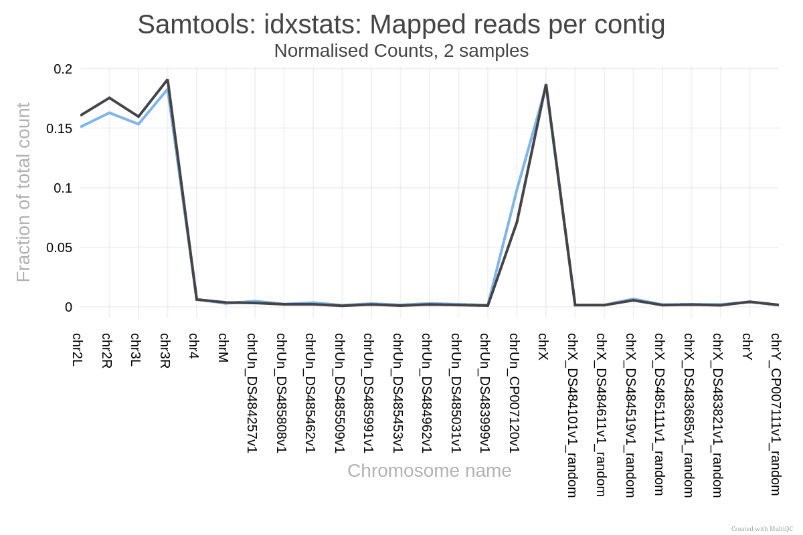
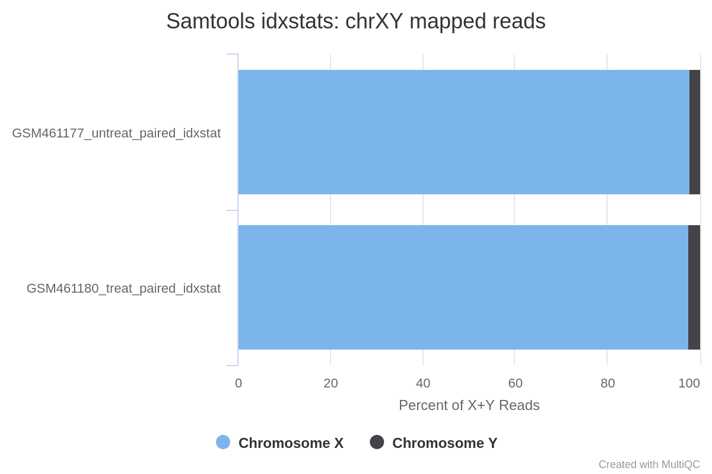
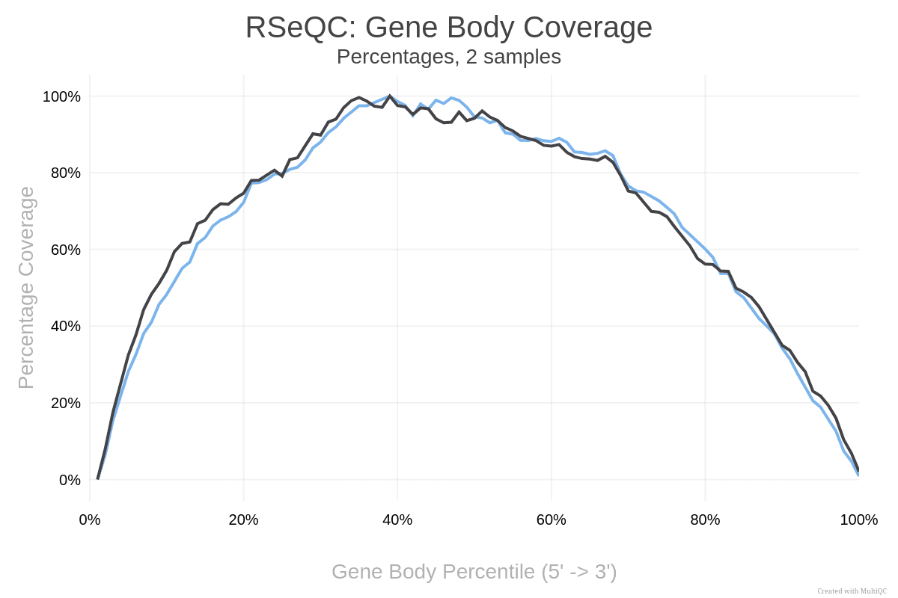
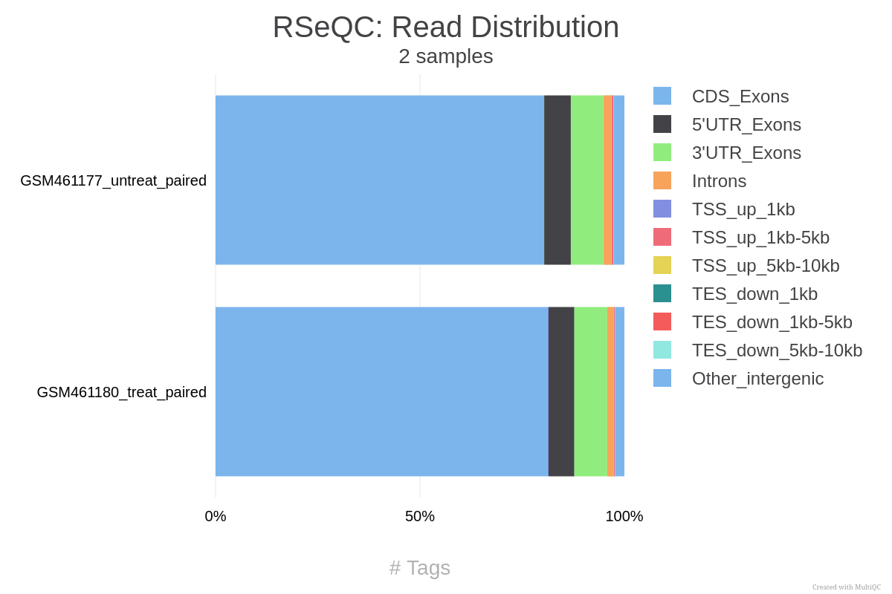
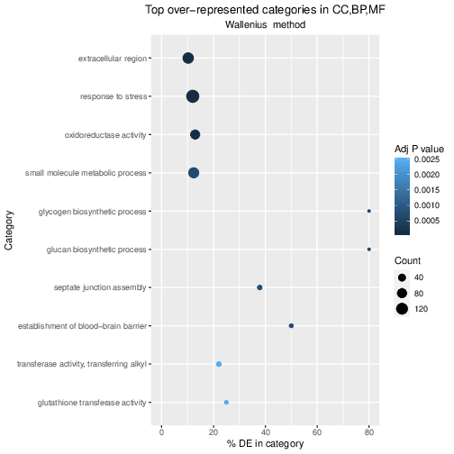
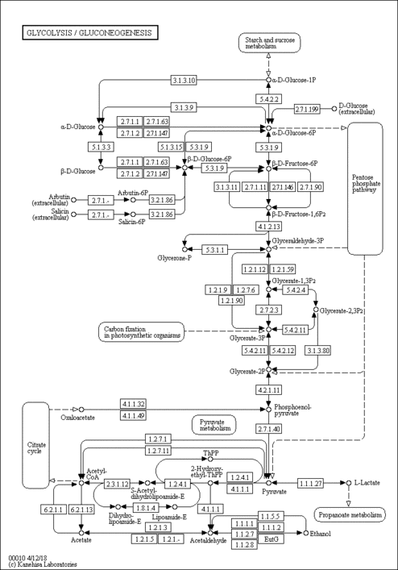
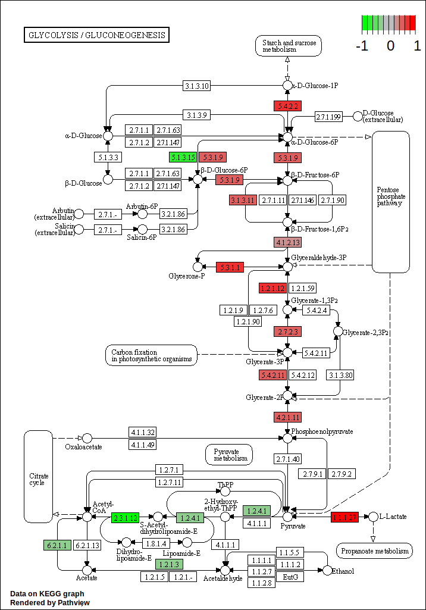

In den letzten Jahren hat sich die RNA-Sequenzierung (kurz RNA-Seq) zu einer weit verbreiteten Technologie entwickelt, um das sich ständig verändernde zelluläre Transkriptom zu analysieren, d. h. die Menge aller RNA-Moleküle in einer Zelle oder einer Zellpopulation. Eines der häufigsten Ziele von RNA-Seq ist die Erstellung von Profilen der Genexpression durch die Identifizierung von Genen oder molekularen Pfaden, die zwischen zwei oder mehreren biologischen Bedingungen unterschiedlich exprimiert werden. Dieses Tutorial demonstriert einen computergestützten Arbeitsablauf für die Erkennung von diffrentiell exprimierten Genen und -Pfaden aus RNA-Seq-Daten, indem es eine vollständige Analyse eines RNA-Seq-Experiments vorstellt, bei dem Drosophila-Zellen nach der Deletion eines regulatorischen Gens profiliert wurden.
In der Studie von Brooks et al. 2011 identifizierten die Autoren anhand von RNA-Seq-Daten Gene und Signalwege, die durch das Pasilla-Gen (das Drosophila-Homolog der Nova-1- und Nova-2-Proteine, die das Spleißen bei Säugetieren regulieren) reguliert werden. Sie entfernten das Pasilla (PS) Gen in Drosophila melanogaster durch RNA-Interferenz (RNAi). Anschließend wurde die gesamte RNA isoliert und zur Herstellung von Single-End- und Paired-End-RNA-Seq-Bibliotheken für behandelte (PS-depletierte) und unbehandelte Proben verwendet. Diese Bibliotheken wurden sequenziert, um RNA-Seq-Reads für jede Probe zu erhalten. Die RNA-Seq-Daten für die behandelten und die unbehandelten Proben können verglichen werden, um die Auswirkungen der Pasilla-Gendepletion auf die Genexpression zu ermitteln.
In diesem Tutorial wird die Analyse der Genexpressionsdaten Schritt für Schritt anhand von 7 der Originaldatensätze veranschaulicht:
Jede Probe ist ein separates biologisches Replikat der entsprechenden Bedingung (behandelt oder unbehandelt). Außerdem stammen zwei der behandelten und zwei der unbehandelten Proben aus einem Paired-End-Sequenzierungsassay, während die übrigen Proben aus einem Single-End-Sequenzierungsexperiment stammen.
Kommentar: Vollständige Daten
Die Originaldaten sind im NCBI Gene Expression Omnibus (GEO) unter der Zugriffsnummer GSE18508 verfügbar. Die RNA-Seq-Rohdaten wurden aus den Dateien des Sequence Read Archive (SRA) extrahiert und in FASTQ-Dateien umgewandelt.
Agenda
In diesem Tutorium werden wir uns mit folgenden Themen beschäftigen:
Im ersten Teil dieses Tutorials werden wir die Dateien für 2 der 7 Proben verwenden, um zu demonstrieren, wie die Anzahl der Reads (ein Maß für die Genexpression) aus FASTQ-Dateien berechnet wird (Qualitätskontrolle, Mapping, Lesezählung). Wir stellen die FASTQ-Dateien für die anderen 5 Proben zur Verfügung, falls Sie die gesamte Analyse später reproduzieren möchten.
Im zweiten Teil des Tutorials werden die Read-Zahlen aller 7 Proben verwendet, um die DE-Gene, Genfamilien und molekularen Pfade zu identifizieren und zu visualisieren, die durch die Abreicherung des PS-Gens entstehen.
Praktische Übung: Daten-Upload
Erstellen Sie einen neuen Verlauf für diese RNA-Seq-Übung
Um einen neuen Verlauf zu erstellen, klicken Sie einfach auf das Symbol new-history am oberen Rand des Verlaufsfensters:
Importieren Sie die FASTQ-Dateipaare von Zenodo oder einer Datenbibliothek:
GSM461177 (unbehandelt): GSM461177_1 und GSM461177_2
GSM461180 (behandelt): GSM461180_1 und GSM461180_2
Klicken Sie auf galaxy-uploadDaten hochladen am oberen Rand der Werkzeugleiste
Wählen Sie galaxy-wf-editDaten einfügen/holen
Fügen Sie den/die Link(s) in das Textfeld ein
Drücken Sie Start
Schließen Sie das Fenster
Als Alternative zum Hochladen der Daten von einer URL oder Ihrem Computer können die Dateien auch von einer Shared Data Library zur Verfügung gestellt werden:
Gehen Sie in Bibliotheken (linker Bereich)
Navigieren Sie zu dem richtigen Ordner, wie von Ihrem Ausbilder angegeben.
Auf den meisten Galaxies werden die Tutoriumsdaten in einem Ordner mit dem Namen GTN - Material –> Topic Name -> Tutorial Name bereitgestellt.
Wählen Sie die gewünschten Dateien aus
Klicken Sie auf Zur Historie hinzufügengalaxy-dropdown am oberen Rand und wählen Sie as Datasets aus dem Dropdown-Menü
Wählen Sie im Pop-up-Fenster
“Historie auswählen “: die Historie, in die Sie die Daten importieren möchten (oder erstellen Sie eine neue)
Klicken Sie auf Importieren
Kommentar
Beachten Sie, dass es sich hierbei um vollständige Dateien für die Proben handelt, die jeweils ~1,5 GB groß sind, so dass der Import einige Minuten dauern kann.
Für einen schnelleren Durchlauf der FASTQ-Schritte kann eine kleine Teilmenge jeder FASTQ-Datei (~5Mb) hier auf Zenodo gefunden werden:
Überprüfen Sie, ob der Datentyp fastqsanger ist (z.B. nichtfastq). Ist dies nicht der Fall, ändern Sie bitte den Datentyp in fastqsanger.
Klicken Sie auf das galaxy-pencilBleistift-Symbol für den Datensatz, um seine Attribute zu bearbeiten
Klicken Sie im zentralen Panel auf galaxy-chart-select-data *registerkarte *Datentypen** oben
Im Feld galaxy-chart-select-dataDatentyp zuweisen, wählen Sie fastqsanger aus dem “Neuer Typ“-Dropdown
Tipp: Sie können mit der Eingabe des Datentyps in das Feld beginnen, um das Dropdown-Menü zu filtern
Klicken Sie auf die Schaltfläche Speichern
Erstellen Sie eine gepaarte Sammlung mit dem Namen 2 PE fastqs, benennen Sie Ihre Paare mit dem Probennamen, gefolgt von den Attributen:GSM461177_untreat_paired und GSM461180_treat_paired.
Klicken Sie auf galaxy-selectorElemente auswählen am oberen Rand des Verlaufsfensters
Überprüfen Sie alle Datensätze in Ihrem Verlauf, die Sie einschließen möchten
Klicken Sie auf n of N selected und wählen Sie Liste der Datensatzpaare erstellen
Sie befinden sich im Assistenten zum Erstellen von Sammlungen. Wählen Sie Liste gepaarter Datensätze und klicken Sie auf die Schaltfläche ‘Weiter’ unten rechts.
Überprüfen und konfigurieren Sie das automatische Paaren. Gewöhnlich haben Mate-Paare die Endungen _1 und _2 oder _R1 und _R2. Klicken Sie unten auf ‘Weiter’.
Bearbeiten Sie den Listenbezeichner nach Bedarf.
Geben Sie einen Namen für Ihre Sammlung ein
Klicken Sie auf Erstellen, um Ihre Sammlung zu erstellen
Klicken Sie erneut auf das Häkchen-Symbol oben in Ihrem Verlauf
Frage
Wie werden die DNA-Sequenzen gespeichert?
Was sind die anderen Einträge der Datei?
Die DNA-Sequenzen werden in einer FASTQ-Datei gespeichert, in der zweiten Zeile jeder 4-Zeilen-Gruppe.
Dieses Dateiformat wird FASTQ-Format genannt. Es speichert Sequenzinformationen und Qualitätsinformationen. Jede Sequenz wird durch eine Gruppe von 4 Zeilen dargestellt, wobei die erste Zeile die Sequenz-ID ist, die zweite die Sequenz der Nukleotide, die dritte eine Übergangszeile und die letzte eine Sequenz der Qualitätsbewertung für jedes Nukleotid.
Die Reads sind Rohdaten aus dem Sequenziergerät ohne jegliche Vorbehandlung. Sie müssen auf ihre Qualität geprüft werden.
Qualitätskontrolle
Während der Sequenzierung treten Fehler auf, z. B. werden falsche Nukleotide aufgerufen. Diese sind auf die technischen Beschränkungen der einzelnen Sequenzierplattformen zurückzuführen. Sequenzierungsfehler können die Analyse verfälschen und zu einer Fehlinterpretation der Daten führen. Es können auch Adapter vorhanden sein, wenn die Reads länger sind als die sequenzierten Fragmente, und das Trimmen dieser kann die Anzahl der gemappten Reads verbessern.
Die Qualitätskontrolle der Sequenzen ist daher ein wichtiger erster Schritt in Ihrer Analyse. Wir werden ähnliche Werkzeuge verwenden, wie sie im “Qualitätskontrolle”-Tutorial beschrieben sind:
Falco, eine effizienzoptimierte Neuformulierung von FastQC, um einen Bericht über die Sequenzqualität zu erstellen
Cutadapt (Marcel 2011), um die Qualität der Sequenzen durch Trimmen und Filtern zu verbessern.
Leider unterstützt die aktuelle Version von MultiQC (das Tool, das wir zum Kombinieren von Berichten verwenden) keine Listen von Paarsammlungen. Wir müssen zunächst unsere Liste von Paaren in eine einfache Liste umwandeln.
Die aktuelle Situation ist oben, und das Tool Flatten collection wandelt sie in die unten angezeigte Situation um: Open image in new tab
<figcaption>Abbildung 1: Flatten the list of pairs to list</figcaption>
Praktische Übung: Qualitätskontrolle
Flatten collection mit den folgenden Parametern konvertiert die Liste der Paare in eine einfache Liste:
“Input Collection “: 2 PE fastqs
Falco ( Galaxy version 1.2.4+galaxy0) mit den folgenden Parametern:
param-collection“Rohe Lesedaten aus Ihrer aktuellen Historie “: Ausgabe von Flatten collectiontool ausgewählt als Dataset collection
Klicken Sie auf param-collectionDatensatzsammlung vor dem Eingabeparameter, dem Sie die Sammlung übergeben wollen.
Wählen Sie die zu verwendende Sammlung aus der Liste aus
Untersuchen Sie die Ausgabe der Webseite von Falcotool für die Probe GSM461177_untreat_paired (vorwärts und rückwärts)
Frage
Wie lang ist der Read?
Die Leselänge der beiden Paare beträgt 37 bp.
Da es mühsam ist, alle diese Berichte einzeln zu prüfen, werden wir sie mit MultiQC ( Galaxy version 1.11+galaxy1) kombinieren.
MultiQC ( Galaxy version 1.24.1+galaxy0) um die Falco-Berichte mit den folgenden Parametern zu aggregieren:
In “Results “:
“Ergebnisse “
“Mit welchem Tool wurden die Protokolle erstellt? “: FastQC (Falco ist ein einfacher Ersatz für FastQC und wir können seine Ausgabe an MultiQC weitergeben, als ob sie von dem ursprünglichen Tool erzeugt worden wäre.)
In “FastQC output “:
param-repeat“FastQC-Ausgabe einfügen “
param-collection“FastQC-Ausgabe “: Falco on collection N: RawData (Ausgabe von Falcotool)
Prüfen Sie die Webseitenausgabe von MultiQC für jeden FASTQ
Frage
Was halten Sie von der Qualität der Sequenzen?
Was sollten wir tun?
Bei 3 der Dateien scheint alles in Ordnung zu sein. Die GSM461177_untreat_paired haben 10,6 Millionen gepaarte Sequenzen und GSM461180_treat_paired 12,3 Millionen gepaarte Sequenzen. Aber in GSM461180_treat_paired_reverse (Reverse Reads von GSM461180) nimmt die Qualität am Ende der Sequenzen ziemlich stark ab.
Alle Dateien außer GSM461180_treat_paired_reverse haben einen hohen Anteil an duplizierten Reads (zu erwarten bei RNA-Seq-Daten).
Die “Pro-Base-Sequenzqualität” ist insgesamt gut mit einer leichten Abnahme am Ende der Sequenzen. Für GSM461180_treat_paired_reverse ist die Abnahme ziemlich groß.
Es gibt fast keine bekannten Adapter und überrepräsentierte Sequenzen.
Wenn die Qualität der Reads schlecht ist, sollten wir folgende Schritte befolgen:
Überprüfen Sie, was falsch ist, und denken Sie über mögliche Gründe für die schlechte Lesequalität nach: Sie kann von der Art der Sequenzierung oder von dem, was wir sequenziert haben, herrühren (hohe Anzahl überrepräsentierter Sequenzen in Transkriptomikdaten, verzerrter Prozentsatz von Basen in Hi-C-Daten)
Fragen Sie die Sequenziereinrichtung danach
Führen Sie eine Qualitätsbehandlung durch (wobei Sie darauf achten sollten, nicht zu viele Informationen zu verlieren) und entfernen Sie schlechte Reads
Wir sollten die Reads trimmen, um Basen zu entfernen, die mit hoher Unsicherheit (d.h. Basen mit niedriger Qualität) an den Read-Enden sequenziert wurden, und auch die Reads mit insgesamt schlechter Qualität entfernen.
Frage
Welche Beziehung besteht zwischen GSM461177_untreat_paired_forward und GSM461177_untreat_paired_reverse?
Die Daten wurden mittels Paired-End-Sequenzierung sequenziert.
Die Paired-End-Sequenzierung basiert auf der Idee, dass die anfänglichen DNA-Fragmente (länger als die tatsächliche Leselänge) von beiden Seiten sequenziert werden. Dieser Ansatz führt zu zwei Reads pro Fragment, wobei der erste Read in Vorwärtsorientierung und der zweite Read in Rückwärtskomplementorientierung erfolgt. Der Abstand zwischen beiden Reads ist bekannt. Er kann daher als zusätzliche Information verwendet werden, um das Read-Mapping zu verbessern.
Bei der Paired-End-Sequenzierung ist jedes Fragment stärker abgedeckt als bei der Single-End-Sequenzierung (nur die Vorwärtsrichtung wird sequenziert):
Die Paired-End-Sequenzierung erzeugt dann 2 Dateien:
Eine Datei mit den Sequenzen, die der Vorwärtsorientierung aller Fragmente entsprechen
Eine Datei mit den Sequenzen, die der umgekehrten Orientierung aller Fragmente entsprechen
Hier entspricht GSM461177_untreat_paired_forward den Forward Reads und GSM461177_untreat_paired_reverse den Reverse Reads.
Praktische Übung: Trimmen von FASTQs
Cutadapt ( Galaxy version 4.9+galaxy1) mit den folgenden Parametern, um Sequenzen geringer Qualität zu trimmen:
“Single-End- oder Paired-End-Reads? “: Paired-end Collection
param-collection“Gepaarte Sammlung “: 2 PE fastqs
In “Other Read Trimming Options “
“Quality cutoff(s) (R1) “: 20
In “Read Filtering Options “
“Mindestlänge (R1) “: 20
In “Additional outputs to generate “
Auswählen: Report: Cutadapt's per-adapter statistics. You can use this file with MultiQC.
Frage
Warum führen wir das Trimming-Tool nur einmal auf einem Paired-End-Datensatz aus und nicht zweimal, einmal für jeden Datensatz?
Das Tool kann Sequenzen entfernen, wenn sie während des Trimming-Prozesses zu kurz werden. Bei Paired-End-Dateien entfernt es ganze Sequenzpaare, wenn einer (oder beide) der beiden Reads kürzer als der eingestellte Längen-Cutoff geworden sind. Reads eines Read-Paares, die länger als ein bestimmter Schwellenwert sind, bei denen aber der Partner-Read zu kurz geworden ist, können optional in Single-End-Dateien ausgeschrieben werden. Dadurch wird sichergestellt, dass die Informationen eines Lesepaares nicht vollständig verloren gehen, wenn nur ein Read von guter Qualität ist.
MultiQC ( Galaxy version 1.11+galaxy1) um die Cutadapt-Berichte mit den folgenden Parametern zu aggregieren:
In “Results “:
param-repeat“Ergebnisse “
“Mit welchem Tool wurden die Protokolle erstellt? “: Cutadapt/Trim Galore!
param-collection“Ausgabe von Cutadapt “: Cutadapt on collection N: Report (Ausgabe von Cutadapttool) ausgewählt als Datensatzsammlung
Frage
Wie viele Sequenzpaare wurden entfernt, weil mindestens ein Read kürzer war als der Längen-Cutoff?
Wie viele Basenpaare wurden aufgrund schlechter Qualität aus den Forward Reads entfernt? Und aus den Reverse-Reads?
147.810 (1,4%) Reads waren zu kurz für GSM461177_untreat_paired und 1.101.875 (9%) für GSM461180_treat_paired.
Die MultiQC-Ausgabe gibt nur den Anteil der insgesamt getrimmten Bp an, nicht für jeden einzelnen Read. Um diese Information zu erhalten, müssen Sie auf die einzelnen Berichte zurückgreifen. Für GSM461177_untreat_paired wurden 5.072.810 bp von den Forward Reads (Read 1) und 8.648.619 bp von den Reverse Reads (Read 2) aus Qualitätsgründen abgeschnitten. Für GSM461180_treat_paired wurden 10.224.537 bp aus den Forward Reads und 51.746.850 bp aus den Reverse Reads entfernt. Dies ist keine Überraschung; wir haben gesehen, dass am Ende der Reads die Qualität bei den Reverse Reads stärker abnimmt als bei den Forward Reads, insbesondere bei GSM461180_treat_paired.
Mapping
Um aus den Reads einen Sinn zu machen, müssen wir zunächst herausfinden, woher die Sequenzen im Genom stammen, damit wir anschließend bestimmen können, zu welchen Genen sie gehören. Wenn ein Referenzgenom für den Organismus zur Verfügung steht, wird dieser Prozess als “Alignment” oder “Mapping” der Reads auf das Referenzgenom bezeichnet. Dies ist vergleichbar mit dem Lösen eines Puzzles, aber leider sind nicht alle Teile eindeutig.
Kommentar
Möchten Sie mehr über die Prinzipien des Mappings erfahren? Folgen Sie unserem training.
In dieser Studie haben die Autoren Drosophila melanogaster-Zellen verwendet. Wir sollten daher die qualitätskontrollierten Sequenzen auf das Referenzgenom von Drosophila melanogaster abbilden.
Frage
Was ist ein Referenzgenom?
Für jeden Modellorganismus können mehrere mögliche Referenzgenome zur Verfügung stehen (z.B. hg19 und hg38 für den Menschen). Welchem Genom entsprechen sie?
Welches Referenzgenom sollten wir verwenden?
Ein Referenzgenom (oder Referenzassembly) ist ein Satz von Nukleinsäuresequenzen, der als repräsentatives Beispiel für das genetische Material einer Art zusammengestellt wurde. Da sie oft aus der Sequenzierung verschiedener Individuen zusammengestellt werden, repräsentieren sie nicht genau den Gensatz eines einzelnen Organismus, sondern ein Mosaik verschiedener Nukleinsäuresequenzen von jedem Individuum.
Da die Kosten für die DNA-Sequenzierung sinken und neue Technologien zur Sequenzierung des gesamten Genoms aufkommen, werden immer mehr Genomsequenzen erzeugt. Anhand dieser neuen Sequenzen werden neue Alignments erstellt und die Referenzgenome verbessert (weniger Lücken, korrigierte Fehldarstellungen in der Sequenz usw.). Die verschiedenen Referenzgenome entsprechen den verschiedenen freigegebenen Versionen (den so genannten “Builds”).
Das Genom von Drosophila melanogaster ist bekannt und zusammengesetzt und kann in dieser Analyse als Referenzgenom verwendet werden. Beachten Sie, dass neue Versionen von Referenzgenomen veröffentlicht werden können, wenn die Assemblierung verbessert wird. Für dieses Tutorial werden wir die Version 6 der Drosophila melanogaster Referenzgenom-Assemblierung (dm6) verwenden.
Bei eukaryotischen Transkriptomen stammen die meisten Reads von prozessierten mRNAs, denen Introns fehlen:
Abbildung 9: Die Arten von RNA-Seq-Reads (Anpassung der Abbildung 1a von Kim et al. 2015): Reads, die vollständig innerhalb eines Exons gemappt wurden (in rot), Reads, die sich über 2 Exons erstrecken (in blau), Reads, die sich über mehr als 2 Exons erstrecken (in lila)
Daher können sie nicht einfach auf das Genom zurückgemappt werden, wie wir es normalerweise bei DNA-Daten tun. Splice-sensible Mapper wurden entwickelt, um Transkript-abgeleitete Reads effizient gegen ein Referenzgenom zu mappen:
Abbildung 10: Prinzip der gespleißten Mapper: (1) Identifizierung der Reads, die ein einzelnes Exon überspannen, (2) Identifizierung der Spleißverbindungen auf den ungemappten Reads
In den letzten Jahren wurden mehrere Spleiß-Mapper entwickelt, um die explosionsartige Zunahme von RNA-Seq-Daten zu verarbeiten.
TopHat (Trapnell et al. 2009) war eines der ersten Tools, das speziell zur Lösung dieses Problems entwickelt wurde. In TopHat werden Reads gegen das Genom gemappt und in zwei Kategorien unterteilt: (1) diejenigen, die gemappt werden, und (2) diejenigen, die zunächst nicht gemappt sind (IUM). “Stapel” von Reads, die potenzielle Exons darstellen, werden auf der Suche nach potenziellen Donor-/Akzeptor-Spleißstellen erweitert, und potenzielle Spleißverbindungen werden rekonstruiert. Die IUMs werden dann auf diese Verbindungsstellen abgebildet.
Zur weiteren Optimierung und Beschleunigung des Alignments gespleißter Reads wurde HISAT2 (Kim et al. 2019) entwickelt. Es verwendet einen hierarchischen Graph FM (HGFM)-Index, der das gesamte Genom und eventuelle Varianten repräsentiert, zusammen mit überlappenden lokalen Indizes (die jeweils ~57 kb umfassen), die das Genom und seine Varianten gemeinsam abdecken. Auf diese Weise lassen sich mithilfe des globalen Index erste Ansatzpunkte für potenzielle Read-Alignments im Genom finden und diese Alignments mithilfe eines entsprechenden lokalen Index schnell verfeinern:
Abbildung 13: Hierarchischer Graph FM index in HISAT/HISAT2 (Abbildung S8 aus Kim et al. 2015)
Ein Teil des Reads (blauer Pfeil) wird zunächst mit Hilfe des globalen FM-Index auf das Genom abgebildet. *anschließend versucht *HISAT2, das Alignment direkt mit Hilfe der Genomsequenz (violetter Pfeil) zu erweitern. In (a) gelingt dies, und der Read wird ausgerichtet, da er sich vollständig innerhalb eines Exons befindet. In (b) trifft die Erweiterung auf eine Fehlanpassung. Nun nutzt **HISAT2 den lokalen FM-Index, der sich mit dieser Stelle überschneidet, um das passende Mapping für den Rest dieses Reads zu finden (grüner Pfeil). Die Abbildung (c) zeigt eine Kombination dieser beiden Strategien: Der Anfang des Read wird mit Hilfe des globalen FM-Index abgebildet (blauer Pfeil), bis zum Ende des Exons verlängert (violetter Pfeil), mit Hilfe des lokalen FM-Index abgebildet (grüner Pfeil) und erneut verlängert (violetter Pfeil).
STAR aligner (Dobin et al. 2013) ist eine schnelle Alternative für das Mapping von RNA-Seq-Reads gegen ein Referenzgenom unter Verwendung eines unkomprimierten suffix array. Es arbeitet in zwei Stufen. In der ersten Stufe wird eine Seed-Suche durchgeführt:
Abbildung 14: STAR's seed search (Abbildung 1 aus Dobin et al. 2013)
Hier wird ein Read zwischen zwei aufeinanderfolgenden Exons aufgeteilt. STAR beginnt mit der Suche nach einem maximal mappbaren Präfix (MMP) ab dem Beginn des Reads, bis es nicht mehr kontinuierlich übereinstimmen kann. Danach beginnt er mit der Suche nach einem MMP für den nicht übereinstimmenden Teil des Read (a). Im Falle von Mismatches (b) und nicht ausrichtbaren Regionen (c) dienen MMPs als Anker, von denen aus die Ausrichtungen erweitert werden können.
In der zweiten Phase fügt STAR MMPs zusammen, um Alignments auf Leseebene zu erzeugen, die (im Gegensatz zu MMPs) Mismatches und Indels enthalten können. Ein Scoring-Schema wird verwendet, um Stitching-Kombinationen zu bewerten und zu priorisieren und um Reads zu bewerten, die mehreren Orten zugeordnet sind. STAR ist extrem schnell, benötigt aber eine beträchtliche Menge an RAM, um effizient zu arbeiten.
Mapping
Wir werden unsere Reads mit Hilfe von STAR (Dobin et al. 2013) auf das Genom von Drosophila melanogaster mappen.
Praktische Übung: Gespleißtes Mapping
Importieren Sie die Ensembl-Gen-Annotation für Drosophila melanogaster (Drosophila_melanogaster.BDGP6.32.109_UCSC.gtf.gz) aus der Shared Data-Bibliothek, falls verfügbar, oder von Zenodo in Ihre aktuelle Galaxy-History
Vergewissern Sie sich, dass der Datentyp gtf und nicht gff ist, und dass die Datenbank dm6 ist
Kommentar: Wie erhält man eine Annotationsdatei?
Annotationsdateien von Modellorganismen können in der Shared Data Bibliothek verfügbar sein (der Pfad zu diesen Dateien ändert sich von einem Galaxy-Server zum anderen). Sie können die Annotationsdatei auch von der UCSC abrufen (mit dem Tool UCSC Main).
Um diese spezielle Datei zu erstellen, wurde die Annotationsdatei von Ensembl heruntergeladen, das eine umfassendere Datenbank von Transkripten bereitstellt, und wurde weiter angepasst, damit sie mit dem dm6-Genom funktioniert, das auf kompatiblen Galaxy-Servern installiert ist.
RNA STAR ( Galaxy version 2.7.11a+galaxy0) mit den folgenden Parametern, um Ihre Reads auf das Referenzgenom zu mappen:
“Single-end oder paired-end reads “: Paired-end (as collection)
param-collection“RNA-Seq FASTQ/FASTA paired reads “: die Cutadapt on collection N: Reads (Ausgabe von Cutadapttool)
“Benutzerdefiniertes oder eingebautes Referenzgenom “: Use a built-in index
“Referenzgenom mit oder ohne Annotation “: use genome reference without builtin gene-model but provide a gtf
“Referenzgenom auswählen “: Fly (Drosophila melanogaster): dm6 Full
param-file“Genmodell (gff3,gtf) Datei für Spleißverbindungen “: die importierte Drosophila_melanogaster.BDGP6.32.109_UCSC.gtf.gz
“Länge der genomischen Sequenz um annotierte Kreuzungen “: 36 (Dieser Parameter sollte Länge der Reads - 1 sein)
“Ausgabe pro Gen/Transkript “: Per gene read counts (GeneCounts)
“Compute coverage “:
Yes in bedgraph format
MultiQC ( Galaxy version 1.11+galaxy1) um die STAR-Logs mit den folgenden Parametern zu aggregieren:
In “Results “:
“Ergebnisse “
“Mit welchem Tool wurden die Protokolle erstellt? “: STAR
In “STAR output “:
param-repeat“STAR-Ausgabe einfügen “
“Art der STAR-Ausgabe? “: Log
param-collection“STAR log output “: RNA STAR on collection N: log (Ausgabe von RNA STARtool)
Frage
Wie viel Prozent der Reads werden für beide Proben genau einmal gemappt?
Welche anderen Statistiken sind verfügbar?
Mehr als 83% für GSM461177_untreat_paired und 79% für GSM461180_treat_paired. Wir können mit der Analyse fortfahren, da nur Prozentsätze unter 70% auf mögliche Kontaminationen untersucht werden sollten.
Wir haben auch Zugriff auf die Anzahl und den Prozentsatz der Reads, die an mehreren Stellen gemappt wurden, an zu vielen verschiedenen Stellen gemappt wurden oder nicht gemappt wurden, weil sie zu kurz sind.
Wir hätten bei der minimalen Leselänge strenger sein können, um diese nicht gemappten Reads aufgrund ihrer Länge zu vermeiden.
Dem MultiQC-Bericht zufolge werden etwa 80 % der Reads für beide Proben genau einmal auf das Referenzgenom abgebildet. Wir können mit der Analyse fortfahren, da nur Prozentsätze unter 70% auf mögliche Kontaminationen untersucht werden sollten. Beide Proben weisen einen geringen Prozentsatz (weniger als 10 %) von Reads auf, die an mehreren Stellen des Referenzgenoms gemappt wurden. Dies liegt im normalen Bereich für Illumina Short-Read-Sequenzierung, kann aber bei neueren Long-Read-Sequenzierungsdatensätzen, die größere wiederholte Regionen im Referenzgenom umfassen können, niedriger sein und wird bei 3’-End-Bibliotheken höher sein.
Die Hauptausgabe von STAR ist eine BAM-Datei.
Eine BAM-Datei (Binary Alignment Map) ist eine komprimierte Binärdatei, in der die Lesesequenzen gespeichert sind und in der angegeben ist, ob sie an eine Referenzsequenz (z. B. ein Chromosom) angeglichen wurden, und wenn ja, an welcher Position auf der Referenzsequenz sie angeglichen wurden.
Praktische Übung: Inspektion einer BAM/SAM-Datei
Untersuchen Sie die param-file Ausgabe von RNA STARtool
Eine BAM-Datei (oder eine SAM-Datei, die nicht komprimierte Version) besteht aus:
Ein Header-Abschnitt (die Zeilen, die mit @ beginnen), der Metadaten enthält, insbesondere die Chromosomennamen und -längen (Zeilen, die mit dem Symbol @SQ beginnen)
Ein Alignment-Abschnitt, bestehend aus einer Tabelle mit 11 Pflichtfeldern sowie einer variablen Anzahl von optionalen Feldern:
Col
Field
Type
Brief Description
1
QNAME
String
Query template NAME
2
FLAG
Integer
Bitwise FLAG
3
RNAME
String
References sequence NAME
4
POS
Integer
1- based leftmost mapping POSition
5
MAPQ
Integer
MAPping Quality
6
CIGAR
String
CIGAR String
7
RNEXT
String
Ref. name of the mate/next read
8
PNEXT
Integer
Position of the mate/next read
9
TLEN
Integer
Observed Template LENgth
10
SEQ
String
Segment SEQuence
11
QUAL
String
ASCII of Phred-scaled base QUALity+33
Frage
Welche Informationen finden Sie in einer SAM/BAM-Datei?
Was sind die zusätzlichen Informationen im Vergleich zu einer FASTQ-Datei?
Sequenzen und Qualitätsinformationen, wie ein FASTQ
Mapping-Informationen, Position des Read auf dem Chromosom, Mapping-Qualität, etc
Inspektion der Mapping-Ergebnisse
Die BAM-Datei enthält Informationen für alle unsere Reads, was eine Überprüfung und Untersuchung im Textformat erschwert. Ein leistungsstarkes Tool zur Visualisierung des Inhalts von BAM-Dateien ist der Integrative Genomics Viewer (IGV, Robinson et al. 2011).
Praktische Übung: Inspektion der Kartierungsergebnisse
Installieren Sie IGV (falls nicht bereits installiert)
IGV lokal starten
Klicken Sie auf die Sammlung RNA STAR on collection N: mapped.bam (Ausgabe von RNA STARtool)
Erweitern Sie die param-file datei GSM461177_untreat_paired.
Klicken Sie auf das galaxy-barchart visualize icon im GSM461177 file block.
Klicken Sie im mittleren Feld auf das local in display with IGV (local, D. melanogaster (dm6)), um die Reads in den IGV-Browser zu laden
Kommentar
Damit dieser Schritt funktioniert, müssen Sie entweder IGV oder Java Web Start auf Ihrem Rechner installiert haben. Die Fragen in diesem Abschnitt können jedoch auch durch die Betrachtung der IGV-Screenshots unten beantwortet werden.
Abbildung 17: Screenshot eines Sashimi-Plots von Chromosom 4
Was stellt das vertikale rote Balkendiagramm dar? Was ist mit den Bögen mit Zahlen?
Was bedeuten die Zahlen auf den Bögen?
Warum sehen wir verschiedene gestapelte Gruppen von blauen verknüpften Boxen am unteren Rand?
Die Abdeckung für jede Alignment-Spur wird als rotes Balkendiagramm dargestellt. Die Bögen stellen beobachtete Spleißverbindungen dar, d.h., Reads, die Introns überspannen.
Die Zahlen beziehen sich auf die Anzahl der beobachteten Junction Reads.
Die verschiedenen Gruppen von verknüpften Kästchen am unteren Rand stellen die verschiedenen Transkripte der Gene an dieser Stelle dar, die in der GTF-Datei vorhanden sind.
Die Qualität der Daten und des Mappings kann weiter überprüft werden, z. B. durch Inspektion des Read-Duplizierungsgrads, der Anzahl der auf jedes Chromosom gemappten Reads, der Genkörperabdeckung und der Read-Verteilung über die Merkmale.
Doppelte Reads können von hochexprimierten Genen stammen und werden daher in der Regel in der differenziellen RNA-Seq-Expressionsanalyse beibehalten. Ein hoher Prozentsatz an Duplikaten kann jedoch auf ein Problem hinweisen, z. B. eine Überamplifikation während der PCR einer Bibliothek mit geringer Komplexität.
MarkDuplicates aus der Picard-Suite untersucht ausgerichtete Datensätze aus einer BAM-Datei, um doppelte Reads zu finden, d. h. Reads, die auf dieselbe Stelle abgebildet werden (basierend auf der Startposition der Abbildung).
Praktische Übung: Doppelte Reads überprüfen
MarkDuplicates ( Galaxy version 2.18.2.4) mit den folgenden Parametern:
param-collection“SAM/BAM-Datensatz oder Datensatzsammlung auswählen “: RNA STAR on collection N: mapped.bam (Ausgabe von RNA STARtool)
MultiQC ( Galaxy version 1.11+galaxy1) um die MarkDuplicates-Protokolle mit den folgenden Parametern zu aggregieren:
In “Results “:
“Ergebnisse “
“Mit welchem Tool wurden die Protokolle erstellt? “: Picard
In “Picard output “:
param-repeat“Picard-Ausgabe einfügen “
“Art der Picard-Ausgabe? “: Markdups
param-collection“Picard-Ausgabe “: MarkDuplicates on collection N: MarkDuplicate metrics (Ausgabe von MarkDuplicatestool)
Frage
Wie hoch ist der Prozentsatz der doppelten Reads für jede Probe?
Die Probe GSM461177_untreat_paired hat 25,9% duplizierte Reads, während GSM461180_treat_paired 27,8% hat.
Im Allgemeinen wird ein Anteil von bis zu 50% duplizierter Reads als normal angesehen. Unsere beiden Proben sind also in Ordnung.
Anzahl der auf jedes Chromosom abgebildeten Reads
Um die Qualität der Proben zu beurteilen (z. B. übermäßige mitochondriale Kontamination), können wir das Geschlecht der Proben überprüfen, oder um zu sehen, ob einige Chromosomen stark exprimierte Gene haben, können wir die Anzahl der Reads, die jedem Chromosom zugeordnet sind, mit IdxStats aus der Samtools Suite überprüfen.
Praktische Übung: Überprüfen Sie die Anzahl der Reads, die jedem Chromosom zugeordnet sind
Samtools idxstats ( Galaxy version 2.0.4) mit den folgenden Parametern:
param-collection“BAM-Datei “: RNA STAR on collection N: mapped.bam (Ausgabe von RNA STARtool)
MultiQC ( Galaxy version 1.11+galaxy1) um die idxstats-Protokolle mit den folgenden Parametern zu aggregieren:
In “Results “:
“Ergebnisse “
“Mit welchem Tool wurden die Protokolle erstellt? “: Samtools
In “Samtools output “:
param-repeat“Samtools-Ausgabe einfügen “
“Art der Samtools-Ausgabe? “: idxstats
param-collection“Samtools idxstats Ausgabe “: Samtools idxstats on collection N (Ausgabe von Samtools idxstatstool)
Frage

Wie viele Chromosomen hat das Genom von Drosophila?
Wo wurden die Reads hauptsächlich zugeordnet?
Können wir das Geschlecht der Proben bestimmen?
Das Genom von Drosophila hat 4 Chromosomenpaare: X/Y, 2, 3 und 4.
Die Reads kartieren hauptsächlich auf Chromosom 2 (chr2L und chr2R), 3 (chr3L und chr3R) und X. Nur wenige Reads kartieren auf Chromosom 4, was zu erwarten ist, da dieses Chromosom sehr klein ist.
Nach dem Prozentsatz der X+Y-Reads zu urteilen, gehören die meisten Reads zu X und nur wenige zu Y. Das deutet darauf hin, dass es wahrscheinlich nicht viele Gene auf Y gibt, so dass die Proben wahrscheinlich beide weiblich sind.

{: .solution}
Genkörperabdeckung
Die verschiedenen Regionen eines Gens bilden den Genkörper. Es ist wichtig zu prüfen, ob die Leseabdeckung im gesamten Genkörper gleichmäßig ist. Ein Bias zum 5’-Ende von Genen könnte beispielsweise auf einen Abbau der RNA hinweisen. Andererseits könnte ein 3’-Bias darauf hinweisen, dass die Daten von einem 3’-Assay stammen. Um dies zu beurteilen, können wir das Tool Gen Body Coverage aus der RSeQC (Wang et al. 2012) Tool-Suite verwenden. Dieses Tool skaliert alle Transkripte auf 100 Nukleotide (unter Verwendung einer bereitgestellten Annotationsdatei) und berechnet die Anzahl der Reads, die jede (skalierte) Nukleotidposition abdecken. Da dieses Tool sehr langsam ist, werden wir die Abdeckung nur für 200.000 zufällige Reads berechnen.
Praktische Übung: Genkörperabdeckung prüfen
Samtools view ( Galaxy version 1.15.1+galaxy0) mit den folgenden Parametern:
param-collection“SAM/BAM/CRAM-Datensatz “: mapped_reads (Ausgabe von RNA STARtool)
“Was möchten Sie sich ansehen? “: A filtered/subsampled selection of reads
In “Configure subsampling “:
“Subsample alignment “: Specify a target # of reads
“Target # of reads “: 200000
“Seed für Zufallszahlengenerator “: 1
“Was möchten Sie gemeldet haben? “: All reads retained after filtering and subsampling
“Ausgabeformat “: BAM (-b)
“Verwenden Sie eine Referenzsequenz “: No
Convert GTF to BED12 ( Galaxy version 357) um die GTF-Datei in BED zu konvertieren:
Gene Body Coverage (BAM) ( Galaxy version 5.0.1+galaxy2) mit den folgenden Parametern:
“Führen Sie jede Probe einzeln aus, oder kombinieren Sie mehrere Proben in einem Plot “: Run each sample separately
param-collection“Input .bam file “: Ausgabe von Samtools viewtool
param-file“Referenz-Genmodell “: Convert GTF to BED12 on data N: BED12 (Ausgabe von Convert GTF to BED12tool)
MultiQC ( Galaxy version 1.11+galaxy1) um die RSeQC-Ergebnisse mit den folgenden Parametern zu aggregieren:
In “Results “:
“Ergebnisse “
“Mit welchem Tool wurden die Protokolle erstellt? “: RSeQC
In “RSeQC output “:
param-repeat“RSeQC-Ausgabe einfügen “
“Art der RSeQC-Ausgabe? “: gene_body_coverage
param-collection“RSeQC gene_body_coverage output “: Gene Body Coverage (BAM) on collection N (text) (Ausgabe von Gen Body Coverage (BAM)tool)
Frage

Wie ist die Abdeckung über die Genkörper hinweg? Gibt es einen Bias der Proben in 3’ oder 5’?
Für beide Proben gibt es eine ziemlich gleichmäßige Abdeckung von den 5’- bis zu den 3’-Enden (trotz etwas Rauschen in der Mitte). Also kein offensichtlicher Bias in beiden Proben.
Read-Verteilung über Merkmale
Bei RNA-Seq-Daten erwarten wir, dass die meisten Reads eher auf Exons als auf Introns oder intergene Regionen abgebildet werden. Bevor man mit der Zählung und der differenziellen Expressionsanalyse fortfährt, kann es interessant sein, die Verteilung der Reads auf bekannte Genmerkmale (Exons, CDS, 5’UTR, 3’UTR, Introns, intergene Regionen) zu überprüfen. Eine hohe Anzahl von Reads, die auf intergene Regionen abgebildet werden, kann beispielsweise auf das Vorhandensein einer DNA-Kontamination hinweisen.
Hier werden wir das Tool Read Distribution aus der RSeQC (Wang et al. 2012) Tool-Suite verwenden, das die Annotationsdatei verwendet, um die Position der verschiedenen Genmerkmale zu identifizieren.
Praktische Übung: Überprüfen Sie die Anzahl der Reads, die jedem Chromosom zugeordnet sind
Read Distribution ( Galaxy version 5.0.1+galaxy2) mit den folgenden Parametern:
param-collection“Eingabe .bam/.sam-Datei “: RNA STAR on collection N: mapped.bam (Ausgabe von RNA STARtool)
param-file“Referenz-Genmodell “: BED12-Datei (Ausgabe von Convert GTF to BED12tool)
MultiQC ( Galaxy version 1.11+galaxy1) um die Ergebnisse der Read-Verteilung mit den folgenden Parametern zu aggregieren:
In “Results “:
“Ergebnisse “
“Mit welchem Tool wurden die Protokolle erstellt? “: RSeQC
In “RSeQC output “:
param-repeat“RSeQC-Ausgabe einfügen “
“Art der RSeQC-Ausgabe? “: read_distribution
param-collection“RSeQC read_distribution output “: Read Distribution on collection N (Ausgabe von Read Distributiontool)
Frage

Was halten Sie von der Read-Verteilung?
Die meisten Reads werden auf Exons gemappt (>80%), nur ~2% auf Introns und ~5% auf intergene Regionen, was dem entspricht, was wir erwarten. Dies bestätigt, dass es sich bei unseren Daten um RNA-Seq-Daten handelt und dass das Mapping erfolgreich war.
Nachdem wir nun die Ergebnisse des Read-Mappings überprüft haben, können wir mit der nächsten Phase der Analyse fortfahren.
Nach dem Mapping haben wir nun die Information, wo sich die Reads auf dem Referenzgenom befinden und wie gut sie gemappt wurden. Der nächste Schritt in der RNA-Seq-Datenanalyse ist die Quantifizierung der Anzahl der Reads, die auf genomische Merkmale (Gene, Transkripte, Exons, …) abgebildet wurden.
Kommentar
Die Quantifizierung hängt sowohl vom Referenzgenom (der FASTA-Datei) als auch von den zugehörigen Annotationen (der GTF-Datei) ab. Es ist äußerst wichtig, eine Annotationsdatei zu verwenden, die derselben Version des Referenzgenoms entspricht, die Sie für das Mapping verwendet haben (z. B. dm6 hier), da die chromosomalen Koordinaten von Genen in der Regel zwischen verschiedenen Versionen des Referenzgenoms unterschiedlich sind.
Hier werden wir uns auf die Gene konzentrieren, da wir diejenigen identifizieren möchten, die aufgrund des Knockdowns des Pasilla-Gens differenziell exprimiert werden.
Zählen der Anzahl der Reads pro annotiertem Gen
Um die Expression einzelner Gene unter verschiedenen Bedingungen (z.B. mit oder ohne PS-Abreicherung) zu vergleichen, muss zunächst die Anzahl der Reads pro Gen quantifiziert werden, genauer gesagt die Anzahl der Reads, die den Exons jedes Gens zugeordnet sind.
Abbildung 19: Zählen der Anzahl der Reads pro annotiertem Gen
Frage
Im vorherigen Bild,
Wie viele Reads werden für die verschiedenen Exons gefunden?
Wie viele Reads werden für die verschiedenen Gene gefunden?
Anzahl der Reads pro Exon
Exon
Number of reads
gene1 - exon1
3
gene1 - exon2
2
gene2 - exon1
3
gene2 - exon2
4
gene2 - exon3
3
Gen1 hat 4 Reads, nicht 5, wegen des Spleißens des letzten Reads (Gen1 - Exon1 + Gen1 - Exon2). Gen2 hat 6 Reads, von denen 3 gespleißt sind.
Zum Zählen der Anzahl der Reads stehen hauptsächlich zwei Tools zur Verfügung: HTSeq-count (Anders et al. 2015) oder featureCounts (Liao et al. 2013). Zusätzlich erlaubt STAR das Zählen von Reads während des Mappings: Die Ergebnisse sind identisch mit denen von HTSeq-count. Während diese Ausgabe für die meisten Analysen ausreicht, bietet featureCounts mehr Anpassungsmöglichkeiten für das Zählen von Reads (minimale Mapping-Qualität, Zählen von Reads anstelle von Fragmenten, Zählen von Transkripten anstelle von Genen usw.).
Im Prinzip ist das Zählen von Reads, die sich mit genomischen Merkmalen überschneiden, eine recht einfache Aufgabe. Allerdings muss die Strängigkeit der Bibliothek bestimmt werden. Dies ist in der Tat ein Parameter von featureCounts. Im Gegensatz dazu wertet STAR die Zählungen in die drei möglichen Strängigkeit aus, aber Sie benötigen diese Information trotzdem, um die Zählungen zu extrahieren, die Ihrer Bibliothek entsprechen.
Schätzung der Strängigkeit
RNAs, auf die in RNA-Seq-Experimenten typischerweise abgezielt wird, sind einzelsträngig (z.B., mRNAs) und weisen daher eine Polarität auf (5’- und 3’-Enden, die sich funktionell unterscheiden). Bei einem typischen RNA-Seq-Experiment geht die Information über die Strängigkeit verloren, nachdem beide Stränge der cDNA synthetisiert, auf ihre Größe hin selektiert und in eine Sequenzierungsbibliothek umgewandelt wurden. Diese Information kann jedoch für den Schritt des Read-Counting sehr nützlich sein, insbesondere für Reads, die sich auf der Überlappung von 2 Genen befinden, die auf unterschiedlichen Strängen liegen.
Abbildung 20: Wenn bei der Bibliotheksvorbereitung Stranginformationen verloren gingen, wird Read1 dem auf dem Vorwärtsstrang befindlichen Gen1 zugeordnet, aber Read2 ist 'zweideutig', da er sowohl Gen1 (Vorwärtsstrang) als auch Gen2 (Rückwärtsstrang) zugeordnet werden kann.
Einige Bibliotheksvorbereitungsprotokolle erzeugen sogenannte stranded RNA-Seq-Bibliotheken, bei denen die Stranginformationen erhalten bleiben (Levin et al. 2010 bietet einen hervorragenden Überblick). In der Praxis ist es unwahrscheinlich, dass Sie bei Illumina RNA-Seq-Protokollen auf alle in diesem Artikel beschriebenen Möglichkeiten stoßen. Höchstwahrscheinlich werden Sie es entweder mit:
Unstranded RNA-Seq-Daten
Stranded RNA-Seq-Daten, die durch die Verwendung spezieller RNA-Isolierungskits während der Probenvorbereitung erzeugt wurden
Abbildung 21: Verhältnis zwischen DNA- und RNA-Ausrichtung
Der Vorteil von stranded RNA-Seq ist, dass man unterscheiden kann, ob die Reads von vorwärts oder rückwärts kodierten Transkripten stammen. Im folgenden Beispiel kann die Anzahl der Reads für das Gen Mrpl43 nur in einer stranded Bibliothek effizient geschätzt werden, da die meisten Reads das Gen Peo1 in umgekehrter Orientierung überlappen:
Abbildung 22: Non-stranded (oben) vs. reverse strand-specific (unten) RNA-Seq read alignment (using IGV, forward mapping reads are red and reverse mapping reads are blue )
Je nach Ansatz und je nachdem, ob man eine Single-End- oder eine Paired-End-Sequenzierung durchführt, gibt es mehrere Möglichkeiten, wie man die Ergebnisse der Zuordnung dieser Reads zum Genom interpretieren kann:
Abbildung 23: Effects of RNA-Seq library types (Figure adapted from Sailfish documentation)
Diese Information sollte in den FASTQ-Dateien enthalten sein, fragen Sie Ihre Sequenziereinrichtung! Wenn nicht, versuchen Sie, sie auf der Website zu finden, von der Sie die Daten heruntergeladen haben, oder in der entsprechenden Veröffentlichung.
Abbildung 24: In einer stranded forward library, reads map mostly on the same strand as the genes. Bei einer stranded Reverse-Bibliothek befinden sich die Reads meist auf dem Gegenstrang. Bei einer nicht stranded Bibliothek werden die Reads auf beiden Strängen auf die Gene abgebildet, unabhängig von der Ausrichtung des Gens (Beispiel für eine Single-End-Read-Bibliothek).
Es gibt 4 Möglichkeiten, die Strenge von STAR-Ergebnissen abzuschätzen (wählen Sie die von Ihnen bevorzugte)
Wir können eine visuelle Inspektion der Read-Stränge auf IGV durchführen (bei Paired-End-Datensätzen ist dies weniger einfach als bei Single-Read-Daten, und wenn Sie viele Proben haben, kann dies schmerzhaft sein).
Praktische Übung: Schätzung der Strangigkeit mit IGV für eine Paired-End-Bibliothek
Kehren Sie zu Ihrer IGV-Sitzung zurück und öffnen Sie die BAM-Datei GSM461177_untreat_paired.
Kein Problem, Sie müssen nur die vorherigen Schritte wiederholen:
IGV lokal starten
Klicken Sie auf die Sammlung RNA STAR on collection N: mapped.bam (Ausgabe von RNA STARtool)
Erweitern Sie die param-file datei GSM461177_untreat_paired.
Klicken Sie auf das local in display with IGV local D. melanogaster (dm6), um die Reads in den IGV-Browser zu laden
IGVtool
Zoom auf chr3R:9,445,000-9,448,000 (Chromosom 3 zwischen 9,445 kb und 9,448 kb), auf der mapped.bam Spur
Klicken Sie mit der rechten Maustaste und wählen Sie dann Color Aligments by -> first-in-pair strand
Abbildung 26: Screenshot der IGV für non-stranded (oben) vs. reverse strand-specific (unten)
Beachten Sie, dass es keinen Read auf der POSITIV-Gruppe für den Rückwärtsstrang gibt. {: .comment} {: .solution} {: .question}
Alternativ können Sie statt der BAM auch die von STAR generierte Strangabdeckung verwenden. Mit pyGenomeTracks können wir die Abdeckung auf jedem Strang für jede Probe visualisieren. Dieses Tool verfügt über eine Vielzahl von Parametern, mit denen Sie Ihre Diagramme anpassen können.
Praktische Übung: Abschätzung der Strenge mit pyGenometracks aus der STAR-Abdeckung
pyGenomeTracks ( Galaxy version 3.8+galaxy2):
“Region des Genoms zum Plotten “: chr4:540,000-560,000
In “Include tracks in your plot “:
param-repeat“Fügen Sie Spuren in Ihren Plot ein “
“Stil des Tracks wählen “: Bedgraph track
“Plot-Titel “: Sie müssen dieses Feld leer lassen, damit der Titel des Plots der Name der Probe ist.
param-collection“Track file(s) bedgraph format “: Wählen Sie RNA STAR on collection N: Coverage Uniquely mapped strand 1.
“Farbe der Spur “: Wählen Sie eine Farbe Ihrer Wahl, zum Beispiel blau
“Mindestwert “: 0
“Höhe “: 3
“Visualisierung des Datenbereichs anzeigen “: Yes
param-repeat“Fügen Sie Spuren in Ihren Plot ein “
“Stil des Tracks wählen “: Bedgraph track
“Plot-Titel “: Sie müssen dieses Feld leer lassen, damit der Titel des Plots der Name der Probe ist.
param-collection“Track file(s) bedgraph format “: Wählen Sie RNA STAR on collection N: Coverage Uniquely mapped strand 2.
“Farbe der Spur “: Wählen Sie eine Farbe Ihrer Wahl, die sich von der ersten unterscheidet, z. B. rot
“Mindestwert “: 0
“Höhe “: 3
“Visualisierung des Datenbereichs anzeigen “: Yes
param-repeat“Fügen Sie Spuren in Ihren Plot ein “
“Stil des Tracks wählen “: Gene track / Bed track
“Plot title “: Genes
param-file“Track-Datei(en) bed oder gtf-Format “: Wählen Sie Drosophila_melanogaster.BDGP6.32.109_UCSC.gtf.gz
Abbildung 28: STAR coverage for strand 1 in blue and strand 2 in red for unstranded and reverse stranded library
Beachten Sie, dass die Abdeckung auf dem Strang 1 für die stranded_PE-Probe sehr niedrig ist, während das Gen vorwärts ist. Dies bedeutet, dass die Bibliothek von stranded_PE rückwärts gestrandet ist. Im Gegensatz dazu ist bei unstranded_PE der Umfang für beide Stränge vergleichbar.
Sie können die Ausgabe von STAR mit den Zählungen verwenden. Wie bereits erläutert, wertet STAR die Anzahl der Reads auf den Genen für die drei möglichen Szenarien aus: unstranded library, stranded forward oder stranded reverse. Die Bedingung, die den Genen mehr Reads zuordnet, muss die Bedingung sein, die zu Ihrer Bibliothek passt.
Praktische Übung: Schätzung der Strenge mit STAR counts
MultiQC ( Galaxy version 1.11+galaxy1), um die STAR Counts mit den folgenden Parametern zu aggregieren:
In “Results “:
“Ergebnisse “
“Mit welchem Tool wurden die Protokolle erstellt? “: STAR
In “STAR output “:
param-repeat“STAR-Ausgabe einfügen “
“Art der STAR-Ausgabe? “: Gene counts
param-collection“STAR gene count output “: RNA STAR on collection N: reads per gene (Ausgabe von RNA STARtool)
Frage
Wie viel Prozent der Reads werden den Genen zugeordnet, wenn die Bibliothek nichtstrandig/gleichsträngig/rückwärtssträngig ist?
Abbildung 34: Gene counts reverse stranded for unstranded and reverse stranded library
Man beachte, dass es sehr wenige Reads gibt, die den Genen für same stranded zugeordnet werden. Die Zahlen sind zwischen unstranded und reverse stranded vergleichbar, da sich nur wenige Gene auf den gegenüberliegenden Strängen überlappen, aber dennoch geht es von 63,6% (unstranded) auf 65% (reverse stranded).
Eine weitere Möglichkeit ist die Schätzung dieser Parameter mit einem Tool namens Infer Experiment aus der RSeQC (Wang et al. 2012) Tool-Suite.
Dieses Tool nimmt die BAM-Dateien aus dem Mapping, wählt eine Teilprobe der Reads aus und vergleicht deren Genomkoordinaten und Stränge mit denen des Referenzgenmodells (aus einer Annotationsdatei). Anhand des Strangs der Gene kann es abschätzen, ob die Sequenzierung strangspezifisch ist, und wenn ja, wie die Strängigkeit der Reads sind (vorwärts oder rückwärts).
Praktische Übung: Bestimmung der Strenge der Bibliothek mit dem Infer-Experiment
Convert GTF to BED12 ( Galaxy version 357) um die GTF-Datei in BED zu konvertieren:
Möglicherweise haben Sie diese BED12-Datei bereits aus dem Drosophila_melanogaster.BDGP6.32.109_UCSC.gtf.gz-Datensatz konvertiert, wenn Sie den ausführlichen Teil über Qualitätsprüfungen durchgeführt haben. In diesem Fall ist es nicht notwendig, die Konvertierung ein zweites Mal vorzunehmen
Infer Experiment ( Galaxy version 5.0.3+galaxy0), um die Strenge der Bibliothek mit den folgenden Parametern zu bestimmen:
param-collection“Eingabe .bam-Datei “: RNA STAR on collection N: mapped.bam (Ausgabe von RNA STARtool)
param-file“Referenz-Genmodell “: BED12-Datei (Ausgabe von Convert GTF to BED12tool)
“Anzahl der abgetasteten Reads “: 200000
Infer Experiment ( Galaxy version 5.0.3+galaxy0) tool erzeugt eine Datei mit Informationen über:
Paired-End- oder Single-End-Bibliothek
Anteil der Reads, die nicht bestimmt werden konnten
2 Zeilen
Für Single-End
Fraction of reads explained by "++,--": der Anteil der Reads, die dem Vorwärtsstrang zugeordnet sind
Fraction of reads explained by "+-,-+": der Anteil der Reads, die dem Rückwärtsstrang zugeordnet sind
Für Paired-End
Fraction of reads explained by "1++,1--,2+-,2-+": der Anteil der Reads, die dem Vorwärtsstrang zugeordnet sind
Fraction of reads explained by "1+-,1-+,2++,2--": der Anteil der Reads, die dem Rückwärtsstrang zugeordnet sind
Wenn die beiden “Fraction of reads explained by”-Zahlen nahe beieinander liegen, schließen wir daraus, dass es sich bei der Bibliothek nicht um einen strangspezifischen Datensatz (oder um einen nicht stranggebundenen Datensatz) handelt.
Frage
Was sind die “Fraction of the reads explained by” Ergebnisse für GSM461177_untreat_paired?
Glauben Sie, dass der Bibliothekstyp der beiden Proben stranded oder unstranded ist?
Ergebnisse für GSM461177_untreat_paired:
Kommentar: Ergebnisse können variieren
Ihre Ergebnisse können sich aufgrund unterschiedlicher Versionen von Tools, Referenzdaten, externen Datenbanken oder aufgrund stochastischer Prozesse in den Algorithmen geringfügig von den in diesem Tutorium vorgestellten unterscheiden.
This is PairEnd Data
Fraction of reads failed to determine: 0.1013
Fraction of reads explained by "1++,1--,2+-,2-+": 0.4626
Fraction of reads explained by "1+-,1-+,2++,2--": 0.4360
46,26% der Reads werden also dem Vorwärtsstrang und 43,60% dem Rückwärtsstrang zugeordnet.
Ähnliche Statistiken werden für GSM461180_treat_paired gefunden, also scheint die Bibliothek für beide Proben vom Typ unstranded zu sein.
Kommentar: Wie wäre es, wenn die Bibliothek gestrandet wäre?
Nehmen wir weiterhin die 2 BAM als Beispiel, so erhalten wir für die unstranded:
This is PairEnd Data
Fraction of reads failed to determine: 0.0382
Fraction of reads explained by "1++,1--,2+-,2-+": 0.4847
Fraction of reads explained by "1+-,1-+,2++,2--": 0.4771
Und für den Rückwärtsstrang:
This is PairEnd Data
Fraction of reads failed to determine: 0.0504
Fraction of reads explained by "1++,1--,2+-,2-+": 0.0061
Fraction of reads explained by "1+-,1-+,2++,2--": 0.9435
Da es manchmal recht schwierig ist, herauszufinden, welche Einstellungen denen anderer Programme entsprechen, könnte die folgende Tabelle hilfreich sein, um den Bibliothekstyp zu identifizieren:
Library type
Infer Experiment
TopHat
HISAT2
HTSeq-count
featureCounts
Paired-End (PE) - SF
1++,1–,2+-,2-+
FR Second Strand
Second Strand F/FR
yes
Forward (1)
PE - SR
1+-,1-+,2++,2–
FR First Strand
First Strand R/RF
reverse
Reverse (2)
Single-End (SE) - SF
++,–
FR Second Strand
Second Strand F/FR
yes
Forward (1)
SE - SR
+-,-+
FR First Strand
First Strand R/RF
reverse
Reverse (2)
PE, SE - U
undecided
FR Unstranded
default
no
Unstranded (0)
Zählen der Reads pro Genen
Hands-on: Choose Your Own Tutorial
Dies ist ein 'Choose Your Own Tutorial' (CYOT) Abschnitt (auch bekannt als 'Choose Your Own Analysis' (CYOA)), in dem Sie zwischen mehreren Pfaden wählen können. Klicken Sie auf eine der Schaltflächen unten, um auszuwählen, wie Sie dem Tutorial folgen möchten
Um die Anzahl der Reads pro Gen zu zählen, bieten wir ein paralleles Tutorial für die beiden Methoden (STAR und featureCounts) an, die sehr ähnliche Ergebnisse liefern. Welche Methode würden Sie bevorzugen?
Da Sie sich für die featureCounts-Variante des Tutorials entschieden haben, führen wir jetzt featureCounts aus, um die Anzahl der Reads pro annotiertem Gen zu zählen.
Praktische Übung: Anzahl der Reads pro annotiertem Gen zählen
featureCounts ( Galaxy version 2.0.3+galaxy2) mit den folgenden Parametern, um die Anzahl der Reads pro Gen zu zählen:
param-collection“Alignment-Datei “: RNA STAR on collection N: mapped.bam (Ausgabe von RNA STARtool)
“Stranginformationen angeben “: Unstranded
“Gen-Annotation-Datei “: A GFF/GTF file in your history
Einige Reads sind nicht zugeordnet, weil sie mehrfach gemappt wurden; andere wurden keinen oder mehrdeutigen Features zugeordnet.
Wenn der Prozentsatz unter 50% liegt, sollten Sie untersuchen, wo Ihre Reads gemappt werden (innerhalb von Genen oder nicht, mit IGV) und überprüfen, ob die Annotation der richtigen Referenzgenomversion entspricht.
Die Hauptausgabe von featureCounts ist eine Tabelle mit den Counts, d.h. der Anzahl der Reads (oder Fragmente im Falle von Paired-End-Reads), die jedem Gen (in Zeilen, mit ihrer ID in der ersten Spalte) in der angegebenen Annotation zugeordnet sind. FeatureCount erzeugt auch die Ausgabedatensätze für die Feature-Länge. Wir werden diese Datei später benötigen, wenn wir das goseq-Tool ausführen.
Da Sie sich für die STAR-Variante des Tutorials entschieden haben, werden wir STAR zum Zählen der Reads verwenden.
Wie oben geschrieben, hat STAR während des Mappings die Reads für jedes in der Genannotationsdatei angegebene Gen gezählt (dies wurde durch die Option Per gene read counts (GeneCounts) erreicht). Diese Ausgabe enthält jedoch zu Beginn einige Statistiken und die Zählungen für jedes Gen in Abhängigkeit von der Bibliothek (unstranded ist Spalte 2, stranded forward ist Spalte 3 und stranded reverse ist Spalte 4).
Praktische Übung: Inspect STAR output
Überprüfen Sie die Zählungen von GSM461177_untreat_paired in der Sammlung RNA STAR on collection N: reads per gene
Frage
Wie viele Reads sind unmapped/multi-mapped?
In welcher Zeile beginnt die Zählung der Gene?
Was sind die verschiedenen Spalten?
Welche Spalten sind für unseren Datensatz am interessantesten?
Es gibt 1.190.029 ungemappte Reads und 571.324 mehrfach gemappte Reads.
Es beginnt in Zeile 5 mit dem Gen FBgn0250732.
Es gibt 4 Spalten:
Gen-ID
Zählungen für nicht-strängige RNA-seq
Zählungen für den ersten Lesestrang, der mit der RNA abgeglichen wurde
Zählungen für den 2. Lesestrang, der mit der RNA abgeglichen wurde
Wir brauchen die Gene ID Spalte und die 2. Spalte wegen der Unschärfe unserer Daten
Wir werden die Ausgabe von STAR so umformatieren, dass sie der Ausgabe von featureCounts (oder anderen Zählsoftwares) ähnelt, die nur zwei Spalten enthält, eine mit IDs und die andere mit Zählungen.
Praktische Übung: Neuformatierung der STAR-Ausgabe
Select last ( Galaxy version 1.1.0) lines from a dataset (tail) to remove the first 4 lines with the following parameters:
param-collection“Textdatei “: RNA STAR on collection N: reads per gene (Ausgabe von RNA STARtool)
“Operation “: Keep everything from this line on
“Anzahl der Zeilen “: 5
Cut Spalten aus einer Tabelle mit den folgenden Parametern:
“Spalten schneiden “: c1,c2
“Abgegrenzt durch “: Tab
param-collection“From “: Select last on collection N (Ausgabe des Select lasttool)
Umbenennen der Sammlung FeatureCount-like files
Im weiteren Verlauf des Tutorials werden wir die Größe der einzelnen Gene ermitteln müssen. Dies ist eine der Ausgaben von FeatureCounts, aber wir können sie auch direkt aus der Genannotationsdatei erhalten. Da diese Datei recht lang ist, empfehlen wir, sie jetzt zu starten.
Praktische Übung: Genlänge ermitteln
Gene length and GC content ( Galaxy version 0.1.2) mit den folgenden Parametern:
“Wählen Sie eine integrierte GTF-Datei oder eine aus Ihrer Historie “: Use a GTF from history
param-file“Wählen Sie eine GTF-Datei “: Drosophila_melanogaster.BDGP6.32.109_UCSC.gtf.gz
“Auszuführende Analyse “: gene lengths only
Warnung: Prüfen Sie die Version des Tools unten
Dies funktioniert nur mit Version 0.1.2 oder höher
Werkzeuge werden häufig auf neue Versionen aktualisiert. Auf Ihrem Galaxy können mehrere Versionen desselben Tools verfügbar sein. Standardmäßig wird Ihnen die neueste Version des Tools angezeigt.
Wechseln zu einer anderen Version eines Werkzeugs:
Öffnen Sie das Werkzeug
Klicken Sie auf das tool-versions versions logo oben rechts
Wählen Sie die gewünschte Version aus der Auswahlliste
Frage
Welches Feature hat die meisten counts für beide Proben? (Tipp: Verwenden Sie das Werkzeug Sortieren)
Um das am häufigsten entdeckte Merkmal anzuzeigen, müssen wir die Tabelle der Zählungen sortieren. Dies kann wie folgt geschehen:
Sort ( Galaxy version 1.1.1) mit den folgenden Parametern:
param-collection“Sort Query “: featureCounts on collection N: Counts (Ausgabe von featureCountstool)Verwendet die Sammlung FeatureCount-like files
“Number of header “: 10
In “1: Spaltenauswahlen “:
“on column “: Column: 2
Diese Spalte enthält die Anzahl der Reads = counts
“in “: Descending order
Prüfen Sie das Ergebnis
Das Ergebnis der Sortierung der Tabelle nach Spalte 2 zeigt, dass FBgn0284245 das Merkmal mit den meisten Counts ist (etwa 128.740 in GSM461177_untreat_paired und 127.400 in GSM461180_treat_paired).
Der Vergleich verschiedener Ausgabedateien ist einfacher, wenn wir mehr als einen Datensatz gleichzeitig betrachten können. Mit der Scratchbook-Funktion können wir eine Sammlung von Datensätzen zusammenstellen, die dann gemeinsam auf dem Bildschirm angezeigt werden.
Praktische Übung: (Optional) Anzeige der sortierten Reads mit dem Scratchbook
Das Scratchbook wird durch Klicken auf das Neun-Blöcke-Symbol rechts in der oberen Menüleiste von Galaxy aktiviert:
Abbildung 37: Menüleiste mit Scratchbook-Symbol aktiviert
Klicken Sie auf das galaxy-eye (Auge), um eine der sortierten Zähldateien anzuzeigen. Anstatt die gesamte mittlere Leiste zu belegen, wird die Datensatzansicht nun als Overlay angezeigt:
Abbildung 38: Scratchbook showing one dataset overlay
Klicken Sie anschließend auf das galaxy-eye (Auge) auf die zweite sortierte Zähldatei. Der zweite Datensatz wird über den ersten gelegt, aber Sie können das Fenster verschieben, um die beiden Datensätze nebeneinander zu sehen:
Abbildung 39: Scratchbook showing two side by side datasets
Um den Scratchbook-Auswahlmodus zu verlassen, klicken Sie erneut auf das Scratchbook-Symbol. Sie können entscheiden, ob Sie die Fenster schließen oder verkleinern wollen, um sie später anzuzeigen.
Hier haben wir die Reads gezählt, die den Genen von zwei Proben zugeordnet wurden. Es ist wirklich interessant, dasselbe Verfahren für die anderen Datensätze zu wiederholen, insbesondere um zu prüfen, wie sich die Parameter angesichts der unterschiedlichen Datentypen (single-end versus paired-end) unterscheiden.
Praktische Übung: (Optional) Wiederholung mit den anderen Datensätzen
Sie können den gleichen Prozess mit den anderen Sequenzdateien, die auf Zenodo verfügbar sind, und mit der Datenbibliothek durchführen.
Paired-End-Daten
GSM461178_1 und GSM461178_2, die man als GSM461178_untreat_paired bezeichnen kann
GSM461181_1 und GSM461181_2, die man als GSM461181_treat_paired bezeichnen kann
Single-End-Daten
GSM461176, die man als GSM461176_untreat_single bezeichnen kann
GSM461179, die man als GSM461179_treat_single bezeichnen kann
GSM461182, die man als GSM461182_untreat_single bezeichnen kann
Für die Single-End-Daten ist es nicht notwendig, die Sammlung vor dem Schritt Falco zu glätten. Die Parameter aller Tools sind gleich, mit Ausnahme von STAR, für das Sie Length of the genomic sequence around annotated junctions auf 74 setzen können, da ein Datensatz 75bp Reads hat (andere sind 44bp und 45bp) und FeatureCount, wenn Ihre Daten nicht mehr gepaart sind.
Analyse der differentiellen Genexpression
Identifizierung der differentiell exprimierten Merkmale
Um die durch die PS-Abreicherung induzierte differentielle Genexpression identifizieren zu können, müssen alle Datensätze (3 behandelte und 4 unbehandelte) nach demselben Verfahren analysiert werden. Um Zeit zu sparen, haben wir die vorherigen Schritte für Sie ausgeführt. Wir erhalten dann 7 Dateien mit den Zählungen für jedes Gen von Drosophila für jede Probe.
Praktische Übung: Importiere alle Zähldateien
Erstellen eines neuen leeren Verlaufs
Um einen neuen Verlauf zu erstellen, klicken Sie einfach auf das Symbol new-history am oberen Rand des Verlaufsfensters:
Importieren Sie die sieben Zähldateien von Zenodo oder der Shared Data Bibliothek:
Man könnte meinen, wir könnten einfach die Zählwerte in den Dateien direkt vergleichen und das Ausmaß der unterschiedlichen Genexpression berechnen. So einfach ist es jedoch nicht.
Nehmen wir an, wir haben RNA-Seq-Daten von 3 Proben für ein Genom mit 4 Genen:
Gene
Sample 1 Counts
Sample 2 Counts
Sample 3 Counts
A (2kb)
10
12
30
B (4kb)
20
25
60
C (1kb)
5
8
15
D (10kb)
0
0
1
Probe 3 hat mehr Reads als die anderen Replikate, unabhängig vom Gen. Sie hat eine höhere Sequenzierungstiefe als die anderen Replikate. Gen B ist doppelt so lang wie Gen A: Das könnte erklären, warum es doppelt so viele Reads hat, unabhängig von den Replikaten.
Die Anzahl der sequenzierten Reads, die einem Gen zugeordnet sind, hängt also ab von:
Die Sequenziertiefe der Proben
Proben, die mit größerer Tiefe sequenziert wurden, haben mehr Reads, die den einzelnen Genen zugeordnet sind
Die Länge des Gens
Längere Gene haben mehr Reads, die ihnen zugeordnet sind
Um Proben oder Genexpressionen vergleichen zu können, müssen die Genzahlen normalisiert werden. Wir könnten TPM (Transcripts Per Kilobase Million) verwenden.
Diese drei Metriken werden zur Normalisierung der Zähltabellen für verwendet:
Sequenzierungstiefe (der “Millionen”-Teil)
Genlänge (der “Kilobase”-Teil)
Lassen Sie uns anhand des vorherigen Beispiels RPKM, FPKM und TPM erklären.
Für RPKM (Reads Per Kilobase Million),
Berechnen Sie den Skalierungsfaktor “pro Million”: Summen Sie die gesamten Reads in einer Probe und teilen Sie diese Zahl durch 1.000.000.
Gene
Sample 1 Counts
Sample 2 Counts
Sample 3 Counts
A (2kb)
10
12
30
B (4kb)
20
25
60
C (1kb)
5
8
15
D (10kb)
0
0
1
Total reads
35
45
106
Scaling factor
3.5
4.5
10.6
Aufgrund der kleinen Werte im Beispiel verwenden wir “pro Zehner” statt “pro Million” und teilen daher die Summe durch 10 statt durch 1.000.000.
Teilen Sie die Anzahl der Reads durch den Skalierungsfaktor “pro Million”
Damit wird die Sequenzierungstiefe normalisiert, was zu reads per million (RPM) führt
Gene
Sample 1 RPM
Sample 2 RPM
Sample 3 RPM
A (2kb)
2.86
2.67
2.83
B (4kb)
5.71
5.56
5.66
C (1kb)
1.43
1.78
1.43
D (10kb)
0
0
0.09
Im Beispiel verwenden wir den Skalierungsfaktor “pro Zehner” und erhalten Reads pro Zehner
Dividieren Sie die RPM-Werte durch die Länge des Gens in Kilobasen.
Gene
Sample 1 RPKM
Sample 2 RPKM
Sample 3 RPKM
A (2kb)
1.43
1.33
1.42
B (4kb)
1.43
1.39
1.42
C (1kb)
1.43
1.78
1.42
D (10kb)
0
0
0.009
FPKM (Fragments Per Kilobase Million) ist dem RPKM sehr ähnlich. RPKM wird für Single-End-RNA-seq verwendet, während FPKM für Paired-End-RNA-seq verwendet wird. Bei der Single-End-RNA-Seq entspricht jeder Read einem einzelnen Fragment, das sequenziert wurde. Bei paired-end RNA-seq werden zwei Reads eines Paares von einem einzelnen Fragment gemappt, oder wenn ein Read des Paares nicht gemappt wurde, kann ein Read einem einzelnen Fragment entsprechen (falls wir uns entschieden haben, diese zu behalten). FPKM verfolgt die Fragmente, so dass ein Fragment mit 2 Reads nur einmal gezählt wird.
TPM (Transcripts Per Kilobase Million) ist RPKM und FPKM sehr ähnlich, außer dass die Reihenfolge der Operation
Teilen Sie die Anzahl der Reads durch die Länge der einzelnen Gene in Kilobasen
Dies gibt die Reads pro Kilobase (RPK) an.
Gene
Sample 1 RPK
Sample 2 RPK
Sample 3 RPK
A (2kb)
5
6
15
B (4kb)
5
6.25
15
C (1kb)
5
8
15
D (10kb)
0
0
0.1
Berechnen Sie den Skalierungsfaktor “pro Million”: Summen Sie alle RPK-Werte in einer Probe und teilen Sie diese Zahl durch 1.000.000
Gene
Sample 1 RPK
Sample 2 RPK
Sample 3 RPK
A (2kb)
5
6
15
B (4kb)
5
6.25
15
C (1kb)
5
8
15
D (10kb)
0
0
0.1
Total RPK
15
20.25
45.1
Scaling factor
1.5
2.03
4.51
*Wie oben, wegen der kleinen Werte im Beispiel verwenden wir “pro Zehner” statt “pro Million” und teilen die Summe daher durch 10 statt durch 1.000.000
Teilen Sie die RPK-Werte durch den Skalierungsfaktor “pro Million”
Gene
Sample 1 TPM
Sample 2 TPM
Sample 3 TPM
A (2kb)
3.33
2.96
3.33
B (4kb)
3.33
3.09
3.33
C (1kb)
3.33
3.95
3.33
D (10kb)
0
0
0.1
Im Gegensatz zu RPKM und FPKM wird bei der Berechnung von TPM zuerst auf die Genlänge und dann auf die Sequenziertiefe normalisiert. Die Auswirkungen dieses Unterschieds sind jedoch ziemlich tiefgreifend, wie wir bereits am Beispiel gesehen haben.
Die Summen der einzelnen Spalten sind sehr unterschiedlich:
RPKM
Gene
Sample 1 RPKM
Sample 2 RPKM
Sample 3 RPKM
A (2kb)
1.43
1.33
1.42
B (4kb)
1.43
1.39
1.42
C (1kb)
1.43
1.78
1.42
D (10kb)
0
0
0.009
Total
4.29
4.5
4.25
TPM
Gene
Sample 1 TPM
Sample 2 TPM
Sample 3 TPM
A (2kb)
3.33
2.96
3.33
B (4kb)
3.33
3.09
3.33
C (1kb)
3.33
3.95
3.33
D (10kb)
0
0
0.1
Total
10
10
10
Die Summe aller TPMs in jeder Probe ist gleich. Dies erleichtert den Vergleich des Anteils der Reads, die in jeder Probe auf ein Gen abgebildet wurden. Im Gegensatz dazu kann bei RPKM und FPKM die Summe der normalisierten Reads in jeder Probe unterschiedlich sein, was einen direkten Vergleich der Proben erschwert.
In diesem Beispiel beträgt der TPM für Gen A in Probe 1 3,33 und in Probe 2 3,33. Der gleiche Anteil der gesamten Reads wird dann in beiden Proben dem Gen A zugeordnet (hier 0,33). Da die Summe der TPMs in beiden Proben dieselbe Zahl ergibt (hier 10), ist der Nenner, der zur Berechnung der Anteile erforderlich ist, unabhängig von der Probe derselbe und somit der Anteil der Reads für Gen A (3,33/10 = 0,33) für beide Proben.
Mit RPKM oder FPKM ist es schwieriger, den Anteil der gesamten Reads zu vergleichen, da die Summe der normalisierten Reads in jeder Probe unterschiedlich sein kann (4,29 für Probe 1 und 4,25 für Probe 2). Wenn also die RPKM für Gen A in Probe 1 1,43 und in Probe B 1,43 beträgt, wissen wir nicht, ob derselbe Anteil der Reads in Probe 1 auf Gen A abgebildet wird wie in Probe 2.
Da es bei RNA-Seq darum geht, den relativen Anteil der Reads zu vergleichen, scheint TPM besser geeignet als RPKM/FPKM.
RNA-Seq wird häufig verwendet, um einen Gewebetyp mit einem anderen zu vergleichen, z. B. Muskelgewebe mit Epithelgewebe. Und es könnte sein, dass viele muskelspezifische Gene im Muskel transkribiert werden, aber nicht im Epithelgewebe. Wir nennen dies einen Unterschied in der Zusammensetzung der Bibliothek.
Es ist auch möglich, nach dem Ausschalten eines Transkriptionsfaktors einen Unterschied in der Zusammensetzung der Bibliothek im selben Gewebetyp zu sehen.
Nehmen wir an, wir haben RNA-Seq-Daten von 2 Proben (gleiche Bibliotheksgröße: 635 Reads) für ein Genom mit 6 Genen. Die Gene haben in beiden Proben die gleiche Expression, mit einer Ausnahme: Nur Probe 1 transkribiert das Gen D auf einem hohen Niveau (563 Reads). Da die Bibliotheksgröße für beide Proben gleich ist, hat Probe 2 563 zusätzliche Reads, die auf die Gene A, B, C, E und F verteilt werden.
Gene
Sample 1
Sample 2
A
30
235
B
24
188
C
0
0
D
563
0
E
5
39
F
13
102
Total
635
635
Infolgedessen ist die Anzahl der Reads für alle Gene mit Ausnahme der Gene C und D in Probe 2 sehr hoch. Dennoch ist das einzige differenziell exprimierte Gen das Gen D.
TPM, RPKM oder FPKM berücksichtigen diese Unterschiede in der Bibliothekszusammensetzung während der Normalisierung nicht, komplexere Tools wie DESeq2 hingegen schon.
DESeq2 (Love et al. 2014) ist ein großartiges Tool für den Umgang mit RNA-seq-Daten und die Durchführung von Analysen der differentiellen Genexpression (DGE). Es nimmt Read-Count-Dateien von verschiedenen Proben, kombiniert sie zu einer großen Tabelle (mit Genen in den Zeilen und Proben in den Spalten) und wendet eine Normalisierung für Sequenziertiefe und Bibliothekszusammensetzung an. Die Normalisierung der Genlänge muss nicht berücksichtigt werden, da wir die Zählungen zwischen Probengruppen für dasselbe Gen vergleichen.
Nehmen wir ein Beispiel, um zu zeigen, wie DESeq2 die verschiedenen Proben skaliert:
Gen
Probe 1
Probe 2
Probe 3
A
0
10
4
B
2
6
12
C
33
55
200
Ziel ist es, einen Skalierungsfaktor für jede Probe zu berechnen, der die Lesetiefe und die Zusammensetzung der Bibliothek berücksichtigt.
Nehmen Sie den log\(\_e\) aller Werte:
Gene
log(Probe 1)
log(Probe 2)
log(Probe 3)
A
-Inf
2.3
1.4
B
0.7
1.8
2.5
C
3.5
4.0
5.3
Durchschnitt jeder Zeile:
Gene
Durchschnitt der log-Werte
A
-Inf
B
1.7
C
4.3
Der Durchschnitt der logarithmischen Werte (auch geometrischer Durchschnitt genannt) wird hier verwendet, da er nicht so leicht von Ausreißern beeinflusst wird (z. B. Gen C mit seinem Ausreißer bei Probe 3).
Herausfiltern von Genen, die den Wert unendlich haben.
Gen
Durchschnitt der log-Werte
B
1.7
C
4.3
Hier werden Gene herausgefiltert, die in mindestens einer Probe keine Read-Zahlen aufweisen, z. B. Gene, die nur in einem Gewebe transkribiert werden, wie Gen D im vorherigen Beispiel. Dies trägt dazu bei, die Skalierungsfaktoren auf Gene zu konzentrieren, die unabhängig von der Bedingung in ähnlicher Menge transkribiert werden.
Subtrahieren Sie den durchschnittlichen log-Wert von den log-Zahlen:
Gene
log(Probe 1)
log(Probe 2)
log(Probe 3)
B
-1.0
0.1
0.8
C
-0.8
-0.3
1.0
\[log(\textrm{counts for gene X}) - average(\textrm{log values for counts for gene X}) = log(\frac{\textrm{counts for gene X}}{\textrm{average for gene X}})\]
Dieser Schritt vergleicht das Verhältnis der Zählungen in jeder Probe mit dem Durchschnitt aller Proben.
Berechnen Sie den Median der Verhältnisse für jede Probe:
Gene
log(Probe 1)
log(Probe 2)
log(Probe 3)
B
-1.0
0.1
0.8
C
-0.8
-0.3
1.0
Median
-0.9
-0.1
0.9
Der Median wird hier verwendet, um zu vermeiden, dass extreme Gene (höchstwahrscheinlich seltene) den Wert zu stark in eine Richtung beeinflussen. Er hilft, mäßig exprimierte Gene stärker zu betonen.
Berechnen Sie den Skalierungsfaktor, indem Sie den Exponentialwert der Mediane nehmen:
Gen
Probe 1
Probe 2
Probe 3
Median
-0.9
-0.1
0.9
Skalierungsfaktoren
0.4
0.9
2.5
Berechnen Sie die normalisierten Zählungen: Teilen Sie die ursprünglichen Zählungen durch die Skalierungsfaktoren:
DESeq2 führt auch die Analyse der differentiellen Genexpression (DGE) durch, die zwei grundlegende Aufgaben hat:
Schätzen Sie die biologische Varianz anhand der Wiederholungen für jede Bedingung
Schätzen Sie die Signifikanz der Expressionsunterschiede zwischen zwei beliebigen Bedingungen
Diese Expressionsanalyse wird anhand der Read-Zahlen geschätzt, und es wird versucht, die Variabilität der Messungen durch Wiederholungen zu korrigieren, die für genaue Ergebnisse unbedingt erforderlich sind. Für Ihre eigene Analyse empfehlen wir Ihnen, mindestens 3, aber vorzugsweise 5 biologische Replikate pro Bedingung zu verwenden. Es ist möglich, eine unterschiedliche Anzahl von Replikaten pro Bedingung zu verwenden.
Ein technisches Replikat ist ein Experiment, das einmal durchgeführt, aber mehrmals gemessen wird (z. B. mehrfache Sequenzierung derselben Bibliothek). Ein biologisches Replikat ist ein Experiment, das mehrmals durchgeführt (und auch gemessen) wird.
In unseren Daten haben wir 4 biologische Replikate (hier als Proben bezeichnet) ohne Behandlung und 3 biologische Replikate mit Behandlung (Pasilla-Gen durch RNAi abgereichert).
Wir empfehlen, die Zähltabellen für verschiedene technische Replikate (aber nicht für biologische Replikate) vor einer differenziellen Expressionsanalyse zu kombinieren (siehe DESeq2-Dokumentation)
In die Analyse können dann mehrere Faktoren mit mehreren Ebenen einbezogen werden, die bekannte Variationsquellen beschreiben (z. B. Behandlung, Gewebetyp, Geschlecht, Chargen), wobei zwei oder mehr Ebenen die Bedingungen für jeden Faktor darstellen. Nach der Normalisierung können wir die Reaktion der Expression eines beliebigen Gens auf das Vorhandensein verschiedener Stufen eines Faktors auf statistisch zuverlässige Weise vergleichen.
In unserem Beispiel haben wir Proben mit zwei unterschiedlichen Faktoren, die zu Unterschieden in der Genexpression beitragen können:
Behandlung (entweder behandelt oder unbehandelt)
Sequenzierungstyp (Paired-End oder Single-End)
Hier ist die Behandlung der primäre Faktor, an dem wir interessiert sind. Der Sequenzierungstyp ist eine weitere Information, die wir über die Daten wissen und die die Analyse beeinflussen könnte. Die Multifaktorenanalyse ermöglicht es uns, die Wirkung der Behandlung zu bewerten und dabei auch den Sequenzierungstyp zu berücksichtigen.
Kommentar
Wir empfehlen Ihnen, alle Faktoren hinzuzufügen, die Ihrer Meinung nach die Genexpression in Ihrem Experiment beeinflussen könnten. Das kann der Sequenzierungstyp sein wie hier, aber auch die Manipulation (wenn verschiedene Personen an der Bibliotheksvorbereitung beteiligt sind), andere Chargeneffekte usw…
Wenn Sie nur einen oder zwei Faktoren mit einer geringen Anzahl von biologischen Replikaten haben, ist die Grundeinstellung von DESeq2 ausreichend. Im Falle eines komplexen Versuchsaufbaus mit einer großen Anzahl von biologischen Replikaten sind Tag-basierte Sammlungen angemessen. Beide Ansätze liefern die gleichen Ergebnisse. Der Tag-basierte Ansatz erfordert einige zusätzliche Schritte vor der Ausführung des DESeq2-Tools, lohnt sich aber bei einem komplexen Versuchsaufbau.
Hands-on: Choose Your Own Tutorial
Dies ist ein 'Choose Your Own Tutorial' (CYOT) Abschnitt (auch bekannt als 'Choose Your Own Analysis' (CYOA)), in dem Sie zwischen mehreren Pfaden wählen können. Klicken Sie auf eine der Schaltflächen unten, um auszuwählen, wie Sie dem Tutorial folgen möchten
Welchen Ansatz möchten Sie verwenden?
Wir können jetzt DESeq2 ausführen:
Praktische Übung: Bestimmen Sie differentiell exprimierte Merkmale
DESeq2 ( Galaxy version 2.11.40.8+galaxy0) mit den folgenden Parametern:
“wie “: Select datasets per level
In “Factor “:
“Geben Sie einen Faktornamen an, z.B. effects_drug_x oder cancer_markers “: Treatment
In “1: Faktorebene “:
“Geben Sie ein Faktorniveau an, typische Werte könnten ‘Tumor’, ‘normal’, ‘behandelt’ oder ‘Kontrolle’ sein “: treated
In “Count file(s) “: Select all the treated count files (GSM461179, GSM461180, GSM461181)
In “2: Faktorebene “:
“Geben Sie ein Faktorniveau an, typische Werte könnten ‘Tumor’, ‘normal’, ‘behandelt’ oder ‘Kontrolle’ sein “: untreated
In “Count file(s) “: Select all the untreated count files (GSM461176, GSM461177, GSM461178, GSM461182)
param-repeat“Insert Factor “
“Geben Sie einen Faktornamen an, z.B. effects_drug_x oder cancer_markers “: Sequencing
In “Factor level “:
param-repeat“Insert Factor level “
“Geben Sie ein Faktorniveau an, typische Werte könnten ‘Tumor’, ‘normal’, ‘behandelt’ oder ‘Kontrolle’ sein “: PE
In “Count file(s) “: Select all the paired-end count files (GSM461177, GSM461178, GSM461180, GSM461181)
param-repeat“Insert Factor level “
“Geben Sie ein Faktorniveau an, typische Werte könnten ‘Tumor’, ‘normal’, ‘behandelt’ oder ‘Kontrolle’ sein “: SE
In “Count file(s) “: Select all the single-end count files (GSM461176, GSM461179, GSM461182)
“Files have header? “: Yes
“Auswahl der Eingabedaten “: Count data (e.g. from HTSeq-count, featureCounts or StringTie)
In “Erweiterte Optionen “:
“Beta-Prioritäten verwenden “: Yes
In “Output options “:
“Output selector “: Generate plots for visualizing the analysis results, Output normalised counts
DESeq2 verlangt, dass für jeden Faktor die Anzahl der Proben in jeder Kategorie angegeben wird. Wir werden daher Tags für unsere Sammlung von Zählungen verwenden, um alle Proben, die zur selben Kategorie gehören, einfach auszuwählen. Weitere Informationen über alternative Möglichkeiten, Gruppen-Tags zu setzen, finden Sie in diesem Tutorial.
Praktische Übung: Fügen Sie Ihrer Sammlung Tags für jeden dieser Faktoren hinzu
Erstellen Sie eine Sammelliste mit all diesen Zählungen, die Sie als all counts bezeichnen. Benennen Sie jedes Element so, dass es nur die GSM-ID, die Behandlung und die Bibliothek enthält, z. B. GSM461176_untreat_single.
Klicken Sie auf galaxy-selectorElemente auswählen am oberen Rand des Verlaufsfensters
Überprüfen Sie alle Datensätze in Ihrer Historie, die Sie aufnehmen möchten
Klicken Sie auf n of N selected und wählen Sie Build Dataset List
You are in collection building wizard. Choose Flat List and click ‘Next’ button at the right bottom corner.
Doppelklicken Sie auf die Dateinamen, um sie zu bearbeiten. Entfernen Sie z. B. Dateiendungen oder gemeinsame Präfixe/Suffixe, um die Namen zu bereinigen.
Geben Sie einen Namen für Ihre Sammlung ein
Klicken Sie auf Sammlung erstellen, um Ihre Sammlung zu erstellen
Klicken Sie erneut auf das Häkchensymbol oben in Ihrem Verlauf
Extract element identifiers ( Galaxy version 0.0.2) mit den folgenden Parametern:
param-collection“Datensatz-Sammlung “: all counts
Wir werden nun aus den Namen die Faktoren extrahieren:
Replace Text in entire line ( Galaxy version 9.3+galaxy1)
param-file“Zu verarbeitende Datei “: Ausgabe von Elementbezeichner extrahierentool
In “Replacement “:
In “1: Ersetzung “
“Muster finden “: (.*)_(.*)_(.*)
“Ersetzen durch “: \1_\2_\3\tgroup:\2\tgroup:\3
Dieser Schritt erstellt 2 zusätzliche Spalten mit der Art der Behandlung und der Sequenzierung, die mit dem Tag elements tool verwendet werden können
Ändern Sie den Datentyp in tabular
Klicken Sie auf das galaxy-pencilBleistift-Symbol für den Datensatz, um seine Attribute zu bearbeiten
Klicken Sie im zentralen Panel auf galaxy-chart-select-data *registerkarte *Datentypen** oben
Im Feld galaxy-chart-select-dataDatentyp zuweisen, wählen Sie tabular aus dem “Neuer Typ“-Dropdown
Tipp: Sie können mit der Eingabe des Datentyps in das Feld beginnen, um das Dropdown-Menü zu filtern
Klicken Sie auf die Schaltfläche Speichern
Tag elements
param-collection“Eingabe-Sammlung “: all counts
param-file“Tag collection elements according to this file “: Ausgabe von Replace Texttool
Inspizieren Sie die neue Sammlung
Auf den ersten Blick sieht man es vielleicht nicht, da die Namen gleich sind. Wenn Sie jedoch auf einen klicken und dann auf galaxy-tagsEdit dataset tags klicken, sollten Sie 2 Tags sehen, die mit ‘group:’ beginnen. Mit diesem Schlüsselwort können Sie diese Tags in DESeq2 verwenden.
Wir können jetzt DESeq2 ausführen:
Praktische Übung: Bestimmen Sie differentiell exprimierte Merkmale
DESeq2 ( Galaxy version 2.11.40.8+galaxy0) mit den folgenden Parametern:
“wie “: Select group tags corresponding to levels
param-collection“Count file(s) collection “: Ausgabe von Tag elementstool
In “Factor “:
param-repeat“Insert Factor “
“Geben Sie einen Faktornamen an, z.B. effects_drug_x oder cancer_markers “: Treatment
In “Factor level “:
param-repeat“Insert Factor level “
“Geben Sie ein Faktorniveau an, typische Werte könnten ‘Tumor’, ‘normal’, ‘behandelt’ oder ‘Kontrolle’ sein “: treated
“Wählen Sie Gruppen aus, die dieser Faktorstufe entsprechen “: Tags: treat
param-repeat“Insert Factor level “
“Geben Sie ein Faktorniveau an, typische Werte könnten ‘Tumor’, ‘normal’, ‘behandelt’ oder ‘Kontrolle’ sein “: untreated
“Wählen Sie Gruppen aus, die dieser Faktorstufe entsprechen “: Tags: untreat
param-repeat“Insert Factor “
“Geben Sie einen Faktornamen an, z.B. effects_drug_x oder cancer_markers “: Sequencing
In “Factor level “:
param-repeat“Insert Factor level “
“Geben Sie ein Faktorniveau an, typische Werte könnten ‘Tumor’, ‘normal’, ‘behandelt’ oder ‘Kontrolle’ sein “: PE
“Wählen Sie Gruppen aus, die dieser Faktorstufe entsprechen “: Tags: paired
param-repeat“Insert Factor level “
“Geben Sie ein Faktorniveau an, typische Werte könnten ‘Tumor’, ‘normal’, ‘behandelt’ oder ‘Kontrolle’ sein “: SE
“Wählen Sie Gruppen aus, die dieser Faktorstufe entsprechen “: Tags: single
“Files have header? “: Yes
“Auswahl der Eingabedaten “: Count data (e.g. from HTSeq-count, featureCounts or StringTie)
In “Erweiterte Optionen “:
“Beta-Prioritäten verwenden “: Yes
In “Output options “:
“Output selector “: Generate plots for visualizing the analysis results, Output normalised counts
DESeq2 verlangt, dass für jeden Faktor die Anzahl der Proben in jeder Kategorie angegeben wird. Wir werden daher Muster in den Namen unserer Proben verwenden, um alle Proben, die zur gleichen Kategorie gehören, einfach auszuwählen.
Praktische Übung: Erstellen einer Sammlung für jede Kategorie
Erstellen Sie eine Sammelliste mit all diesen Zählungen, die Sie als all counts bezeichnen. Benennen Sie jedes Element so, dass es nur die GSM-ID, die Behandlung und die Bibliothek enthält, z. B. GSM461176_untreat_single.
Klicken Sie auf galaxy-selectorElemente auswählen am oberen Rand des Verlaufsfensters
Überprüfen Sie alle Datensätze in Ihrer Historie, die Sie aufnehmen möchten
Klicken Sie auf n of N selected und wählen Sie Build Dataset List
You are in collection building wizard. Choose Flat List and click ‘Next’ button at the right bottom corner.
Doppelklicken Sie auf die Dateinamen, um sie zu bearbeiten. Entfernen Sie z. B. Dateiendungen oder gemeinsame Präfixe/Suffixe, um die Namen zu bereinigen.
Geben Sie einen Namen für Ihre Sammlung ein
Klicken Sie auf Sammlung erstellen, um Ihre Sammlung zu erstellen
Klicken Sie erneut auf das Häkchensymbol oben in Ihrem Verlauf
Extract element identifiers ( Galaxy version 0.0.2) mit den folgenden Parametern:
param-collection“Datensatz-Sammlung “: all counts
Wir werden nun die Sammlung nach Behandlung aufteilen. Wir müssen ein Muster finden, das nur in einer der beiden Kategorien vorkommt. Wir werden das Wort untreat verwenden:
Suche in Textdateien ( Galaxy version 9.3+galaxy1) (grep) mit den folgenden Parametern:
“Select lines from “: Extract element identifiers on data XXX (Ausgabe von Elementbezeichner extrahierentool)
“das “: Match
“Regulärer Ausdruck “: untreat
Filter collecion mit den folgenden Parametern:
“Input collection “: all counts
“Wie sollten die zu entfernenden Elemente bestimmt werden “: Remove if identifiers are ABSENT from file
“Filter out identifiers absent from “: Search in textfiles on data XXX (Ausgabe von Suche in Textdateientool)
Benennen Sie beide Sammlungen in untreated (die gefilterte Sammlung) und treated (die verworfene Sammlung) um.
Wir wiederholen den gleichen Prozess mit single
Suche in Textdateien ( Galaxy version 9.3+galaxy1) (grep) mit den folgenden Parametern:
“Select lines from “: Extract element identifiers on data XXX (Ausgabe von Elementbezeichner extrahierentool)
“das “: Match
“Regulärer Ausdruck “: single
Filter collecion mit den folgenden Parametern:
“Input collection “: all counts
“Wie sollten die zu entfernenden Elemente bestimmt werden “: Remove if identifiers are ABSENT from file
“Filter out identifiers absent from “: Search in textfiles on data XXX (Ausgabe von Suche in Textdateientool)
Benennen Sie beide Sammlungen in single (die gefilterte Sammlung) und paired (die verworfene Sammlung) um.
Wir können jetzt DESeq2 ausführen:
Praktische Übung: Bestimmen Sie differentiell exprimierte Merkmale
DESeq2 ( Galaxy version 2.11.40.8+galaxy0) mit den folgenden Parametern:
“wie “: Select datasets per level
In “Factor “:
“Geben Sie einen Faktornamen an, z.B. effects_drug_x oder cancer_markers “: Treatment
In “1: Faktorebene “:
“Geben Sie ein Faktorniveau an, typische Werte könnten ‘Tumor’, ‘normal’, ‘behandelt’ oder ‘Kontrolle’ sein “: treated
param-collection“Datei(en) zählen “: Wählen Sie die Sammlung treated
In “2: Faktorebene “:
“Geben Sie ein Faktorniveau an, typische Werte könnten ‘Tumor’, ‘normal’, ‘behandelt’ oder ‘Kontrolle’ sein “: untreated
param-collection“Datei(en) zählen “: Wählen Sie die Sammlung untreated
param-repeat“Insert Factor “
“Geben Sie einen Faktornamen an, z.B. effects_drug_x oder cancer_markers “: Sequencing
In “Factor level “:
param-repeat“Insert Factor level “
“Geben Sie ein Faktorniveau an, typische Werte könnten ‘Tumor’, ‘normal’, ‘behandelt’ oder ‘Kontrolle’ sein “: PE
param-collection“Datei(en) zählen “: Wählen Sie die Sammlung paired
param-repeat“Insert Factor level “
“Geben Sie ein Faktorniveau an, typische Werte könnten ‘Tumor’, ‘normal’, ‘behandelt’ oder ‘Kontrolle’ sein “: SE
param-collection“Datei(en) zählen “: Wählen Sie die Sammlung single
“Files have header? “: Yes
“Auswahl der Eingabedaten “: Count data (e.g. from HTSeq-count, featureCounts or StringTie)
In “Erweiterte Optionen “:
“Beta-Prioritäten verwenden “: Yes
In “Output options “:
“Output selector “: Generate plots for visualizing the analysis results, Output normalised counts
DESeq2 erzeugt 3 Ergebnisse:
Eine Tabelle mit den normalisierten Zählungen für jedes Gen (Zeilen) in den Proben (Spalten)
Eine grafische Zusammenfassung der Ergebnisse, die für die Bewertung der Qualität des Experiments nützlich ist:
Ein Diagramm der ersten beiden Dimensionen einer Hauptkomponentenanalyse (PCA), die mit den normalisierten Zählungen der Proben durchgeführt wurde
Stellen wir uns vor, wir haben einige Bierflaschen hier auf dem Tisch stehen. Wir können jedes Bier anhand seiner Farbe, seines Schaums, seiner Stärke und so weiter beschreiben. In einem Bierladen können wir eine ganze Liste mit verschiedenen Eigenschaften jedes Biers zusammenstellen. Aber viele von ihnen werden verwandte Eigenschaften messen und daher überflüssig sein. Wenn das so ist, sollten wir in der Lage sein, jedes Bier mit weniger Merkmalen zusammenzufassen. Dies ist die Aufgabe der PCA oder Hauptkomponentenanalyse.
Bei der PCA wählen wir nicht einfach einige interessante Merkmale aus und verwerfen die anderen. Stattdessen konstruieren wir einige neue Merkmale, die unsere Liste von Bieren gut zusammenfassen. Diese neuen Merkmale werden anhand der alten Merkmale konstruiert. Zum Beispiel könnte ein neues Merkmal berechnet werden, z. B. Schaumgröße minus pH-Wert des Bieres. Es handelt sich um lineare Kombinationen.
In der Tat findet die PCA die bestmöglichen Merkmale, die die Liste der Biere zusammenfassen. Diese Merkmale können verwendet werden, um Ähnlichkeiten zwischen Bieren zu finden und sie zu gruppieren.
Die PCA wird mit den normalisierten Zählungen aller Proben durchgeführt. Hier möchten wir die Proben anhand der Expression der Gene beschreiben. Die Merkmale sind also die Anzahl der Reads, die den einzelnen Genen zugeordnet sind. Wir verwenden sie und lineare Kombinationen von ihnen, um die Proben und ihre Ähnlichkeiten darzustellen.
Es zeigt die Proben in der 2D-Ebene, die von ihren ersten beiden Hauptkomponenten aufgespannt wird. Jedes Replikat wird als einzelner Datenpunkt dargestellt. Diese Art der Darstellung ist nützlich, um die Gesamtwirkung von experimentellen Kovariaten und Chargeneffekten zu visualisieren.
Abbildung 40: Principal component plot of the samples
Was ist die erste Dimension (PC1), die trennt?
Und die zweite Dimension (PC2)?
Was können wir über das von uns gewählte DESeq-Design (Faktoren, Ebenen) aussagen?
Die erste Dimension ist die Trennung der behandelten Proben von den unbehandelten Proben.
Die zweite Dimension ist die Trennung der Single-End-Datensätze von den Paired-End-Datensätzen.
Die Datensätze sind nach den Stufen der beiden Faktoren gruppiert. Die Daten scheinen keinen versteckten Effekt zu enthalten. Wenn unerwünschte Variationen in den Daten vorhanden sind (z. B. Chargeneffekte), ist es immer empfehlenswert, diese zu korrigieren. Dies kann in DESeq2 erreicht werden, indem alle bekannten Chargenvariablen in das Design aufgenommen werden.
Heatmap der Probe-zu-Probe-Abstandsmatrix (mit Clustering) auf der Grundlage der normalisierten Anzahlen.
Die Heatmap gibt einen Überblick über die Ähnlichkeiten und Unähnlichkeiten zwischen den Proben: Die Farbe stellt den Abstand zwischen den Proben dar. Dunkelblau bedeutet einen geringeren Abstand, d. h. näher beieinander liegende Proben in Bezug auf die normalisierten Zählungen.
Sie werden erstens nach der Behandlung (erster Faktor) und zweitens nach dem Sequenzierungstyp (zweiter Faktor) gruppiert, wie in der PCA-Darstellung.
Dispersionsschätzungen: genweise Schätzungen (schwarz), die angepassten Werte (rot) und die endgültigen Maximum-a-posteriori-Schätzungen, die beim Testen verwendet wurden (blau)
Dieses Dispersionsdiagramm ist typisch, wobei die endgültigen Schätzungen von den genweisen Schätzungen auf die angepassten Schätzungen geschrumpft sind. Einige genweise Schätzungen werden als Ausreißer markiert und nicht auf den angepassten Wert geschrumpft. Das Ausmaß der Schrumpfung kann je nach Stichprobengröße, Anzahl der Koeffizienten, Zeilenmittelwert und Variabilität der genweisen Schätzungen größer oder kleiner sein als hier dargestellt.
Histogramm der p-Werte für die Gene im Vergleich zwischen den beiden Stufen des ersten Faktors
Dies zeigt die globale Ansicht des Verhältnisses zwischen der Veränderung der Expression der Bedingungen (log ratios, M), der durchschnittlichen Expressionsstärke der Gene (durchschnittlicher Mittelwert, A) und der Fähigkeit des Algorithmus, eine unterschiedliche Genexpression zu erkennen. Die Gene, die die Signifikanzschwelle (angepasster p-Wert < 0,1) überschritten haben, sind rot eingefärbt.
Eine Zusammenfassungsdatei mit den folgenden Werten für jedes Gen:
Gen-Identifikatoren
Mittlere normalisierte Zählungen, gemittelt über alle Proben aus beiden Bedingungen
Fold change in log2 (Logarithmus Basis 2)
Die log2-Fold-Änderungen basieren auf dem primären Faktor Stufe 1 gegenüber Faktor Stufe 2, daher ist die Eingabereihenfolge der Faktorstufen wichtig. In diesem Fall berechnet DESeq2 die Fold Changes der “behandelten” Proben gegenüber den “unbehandelten” Proben anhand des ersten Faktors “Treatment”, d. h. die Werte entsprechen der Hoch- oder Herunterregulierung von Genen in behandelten Proben.
Standardfehlerschätzung für die Schätzung der log2-Fold-Change
p-Wert für die statistische Signifikanz dieser Änderung
p-Wert, bereinigt um Mehrfachtests mit dem Benjamini-Hochberg-Verfahren, das die Falschentdeckungsrate kontrolliert (FDR)
Der p-Wert ist ein Maß, das häufig verwendet wird, um festzustellen, ob eine bestimmte Beobachtung statistisch signifikant ist oder nicht. Streng genommen ist der p-Wert die Wahrscheinlichkeit, dass die Daten zufällig entstanden sein könnten, unter der Annahme, dass die Nullhypothese richtig ist. Im konkreten Fall von RNA-Seq lautet die Nullhypothese, dass es keine unterschiedliche Genexpression gibt. Ein p-Wert von 0,13 für ein bestimmtes Gen bedeutet also, dass für dieses Gen unter der Annahme, dass es nicht differentiell exprimiert wird, eine Wahrscheinlichkeit von 13 % besteht, dass eine offensichtliche differentielle Expression einfach durch zufällige Variation in den experimentellen Daten entstanden sein könnte.
13% ist immer noch ziemlich hoch, so dass wir nicht wirklich sicher sein können, dass eine differentielle Genexpression stattfindet. Die gängigste Art und Weise, wie Wissenschaftler p-Werte verwenden, besteht darin, einen Schwellenwert festzulegen (in der Regel 0,05, manchmal auch andere Werte wie 0,01) und die Nullhypothese nur bei p-Werten unter diesem Wert zurückzuweisen. Bei Genen mit p-Werten unter 0,05 können wir also mit Sicherheit sagen, dass die differentielle Genexpression eine Rolle spielt. Es sei darauf hingewiesen, dass ein solcher Schwellenwert willkürlich ist und es keinen bedeutsamen Unterschied zwischen einem p-Wert von 0,049 und 0,051 gibt, selbst wenn wir nur im ersten Fall die Nullhypothese ablehnen.
Leider werden p-Werte in der wissenschaftlichen Forschung häufig falsch verwendet, so dass Wikipedia einen eigenen Artikel zu diesem Thema bereitstellt. Siehe auch diesen Artikel (der sich an ein allgemeines, nicht-wissenschaftliches Publikum richtet).
Weitere Informationen über DESeq2 und seine Ergebnisse finden Sie in der DESeq2 Dokumentation.
Frage
Wird das Gen FBgn0003360 aufgrund der Behandlung unterschiedlich exprimiert? Wenn ja, wie stark?
Ist das Pasilla-Gen (ps, FBgn0261552) durch die RNAi-Behandlung herunterreguliert?
Wir könnten uns hypothetisch auch für den Effekt der Sequenzierung (oder andere sekundäre Faktoren in anderen Fällen) interessieren. Wie würden wir die unterschiedlich exprimierten Gene aufgrund des Sequenzierungstyps erkennen?
Wir würden gerne die Interaktion zwischen der Behandlung und der Sequenzierung analysieren. Wie können wir das tun?
FBgn0003360 wird aufgrund der Behandlung differenziell exprimiert: Es hat einen signifikanten angepassten p-Wert (\(2.8 \cdot 10^{-171} << 0.05\)). Es wird in behandelten Proben im Vergleich zu unbehandelten Proben um den Faktor ~8 (\(2^{log2FC} = 2^{2.99542318410271}\)) weniger exprimiert (- in der log2FC Spalte).
Sie können manuell nach FBgn0261552 in der ersten Spalte suchen oder Filter data on any column using simple expressions
param-file“Filter “: die DESeq2 result file (Ausgabe von DESeq2tool)
“Mit folgender Bedingung “: c1 == "FBgn0261552"
Die log2-Fold-Änderung ist negativ, so dass es tatsächlich herunterreguliert ist, und der angepasste p-Wert liegt unter 0,05, so dass es zu den signifikant veränderten Genen gehört.
DESeq2 in Galaxy liefert den Vergleich zwischen den verschiedenen Niveaus für den ersten Faktor, nach Korrektur der Variabilität aufgrund des zweiten Faktors. In unserem aktuellen Fall, behandelt gegen unbehandelt für jeden Sequenzierungstyp. Um Sequenzierungstypen zu vergleichen, sollten wir DESeq2 erneut ausführen und die Faktoren wechseln: Faktor 1 (Behandlung) wird zu Faktor 2 und Faktor 2 (Sequenzierung) wird zu Faktor 1.
Um die Interaktion zwischen zwei Faktoren hinzuzufügen (z. B. behandelt für Paired-End-Daten vs. unbehandelt für Single-End-Daten), sollten wir DESeq2 ein weiteres Mal ausführen, aber mit nur einem Faktor mit den folgenden 4 Stufen:
treated-PE
unbehandelt-PE
treated-SE
unbehandelt-SE
Durch Auswahl von “Output all levels vs. all levels of primary factor (use when you have >2 levels for primary factor) “ auf Yes können wir dann treated-PE vs. untreated-SE vergleichen.
Annotation der DESeq2-Ergebnisse
Die ID für jedes Gen ist etwas wie FBgn0003360, was eine ID aus der entsprechenden Datenbank ist, hier Flybase (Thurmond et al. 2018). Diese IDs sind eindeutig, aber manchmal ziehen wir es vor, die Gennamen zu haben, auch wenn sie nicht auf ein eindeutiges Gen verweisen (z. B. dupliziert nach einer Neuannotation). Gennamen können jedoch bereits auf eine Funktion hinweisen oder helfen bei der Suche nach den gewünschten Kandidaten. Wir möchten auch die Position dieser Gene innerhalb des Genoms anzeigen. Diese Informationen können wir aus der Annotationsdatei extrahieren, die wir für die Kartierung und Zählung verwendet haben.
Praktische Übung: Anmerkung der DESeq2-Ergebnisse
Importieren Sie die Ensembl-Gen-Annotation für Drosophila melanogaster (Drosophila_melanogaster.BDGP6.32.109_UCSC.gtf.gz) aus der vorherigen Historie oder aus der Shared Data-Bibliothek oder aus Zenodo:
Annotate DESeq2/DEXSeq output tables ( Galaxy version 1.1.0) with:
param-file“Tabellarische Ausgabe von DESeq2/edgeR/limma/DEXSeq “: die DESeq2 result file (Ausgabe von DESeq2tool)
“Input file type “: DESeq2/edgeR/limma
param-file“Referenzannotation im GFF/GTF-Format “: importiertes gtf Drosophila_melanogaster.BDGP6.32.109_UCSC.gtf.gz
Die erzeugte Ausgabe ist eine Erweiterung der vorherigen Datei:
Gen-Identifikatoren
Mittlere normalisierte Zählungen über alle Proben
Log2 fold change
Standardfehlerschätzung für die Schätzung der log2-Fold-Change
Wald-Statistik
p-Wert für die Wald-Statistik
p-Wert bereinigt um Mehrfachtests mit dem Benjamini-Hochberg-Verfahren für die Wald-Statistik
Chromosom
Start
Ende
Strang
Merkmal
Genname
Frage
Wo befindet sich das am stärksten überexprimierte Gen?
Wie lautet der Name des Gens?
Wo befindet sich das Pasilla-Gen (FBgn0261552)?
FBgn0025111 (das bestplatzierte Gen mit dem höchsten positiven log2FC-Wert) befindet sich auf dem Rückwärtsstrang von Chromosom X, zwischen 10.778.953 bp und 10.786.907 bp.
Aus der Tabelle haben wir das Gensymbol: Ant2. Nach einer Suche in den Online-Biologiedatenbanken stellen wir fest, dass Ant2 der Adenin-Nukleotid-Translokase 2 entspricht.
Das Pasilla-Gen befindet sich auf dem Vorwärtsstrang des Chromosoms 3R, zwischen 9.417.939 bp und 9.455.500 bp.
Die annotierte Tabelle enthält keine Spaltennamen, was die Lesbarkeit erschwert. Wir würden sie gerne hinzufügen, bevor wir weitermachen.
Praktische Übung: Add column names
Erstellen Sie eine neue Datei (header) mit folgendem Inhalt (Kopfzeile der DESeq2-Ausgabe)
GeneID Base mean log2(FC) StdErr Wald-Stats P-value P-adj Chromosome Start End Strand Feature Gene name
Klicken Sie auf galaxy-uploadDaten hochladen am oberen Rand des Werkzeugfensters
Wählen Sie galaxy-wf-editEinfügen/Daten holen am unteren Rand
Fügen Sie den Inhalt der Datei in das Textfeld ein
Ändern Sie den Namen des Datensatzes von “Neue Datei” in header
Ändern Sie Type von “Auto-detect” auf tabular* Drücken Sie Start und Schließen Sie das Fenster
Concatenate multiple datasets or collections um diese Kopfzeile zur Annotate Ausgabe hinzuzufügen:
param-file“Concatenate Dataset “: der header-Datensatz
“Dataset “
Klicken Sie auf param-repeat“Insert Dataset “
param-file“select “: Ausgabe von Annotatetool
Benennen Sie die Ausgabe in Annotated DESeq2 results um
Extraktion und Annotation von differenziell exprimierten Genen
Nun möchten wir die am stärksten differentiell exprimierten Gene aufgrund der Behandlung mit einer Fold Change > 2 (oder < 1/2) extrahieren.
Praktische Übung: Extrahieren Sie die am stärksten differentiell exprimierten Gene
Filter data on any column using simple expressions um Gene mit einer signifikanten Veränderung der Genexpression (angepasster p-Wert unter 0,05) zwischen behandelten und unbehandelten Proben zu extrahieren:
param-file“Filter “: Annotated DESeq2 results
“Mit folgender Bedingung “: c7<0.05
“Anzahl der zu überspringenden Kopfzeilen “: 1
Benennen Sie die Ausgabe Genes with significant adj p-value um.
Frage
Wie viele Gene weisen eine signifikante Veränderung der Genexpression zwischen diesen Bedingungen auf?
Wir erhalten 966 (967 Zeilen einschließlich Header) Gene (4,04%) mit einer signifikanten Veränderung der Genexpression zwischen behandelten und unbehandelten Proben.
Kommentar
Die Datei mit den unabhängig gefilterten Ergebnissen kann für weitere nachgeschaltete Analysen verwendet werden, da sie Gene mit nur wenigen Read-Zahlen ausschließt, da diese Gene nicht als signifikant unterschiedlich exprimiert angesehen werden.
Wir wählen nun nur die Gene aus, die eine Fold Change (FC) > 2 oder FC < 0,5 aufweisen. Beachten Sie, dass die DESeq2-Ausgabedatei \(log\_{2} FC\) enthält, und nicht den FC selbst, so dass wir nach \(abs(log\_{2} FC) > 1\) filtern (was FC > 2 oder FC < 0,5 impliziert).
Daten in jeder Spalte mit einfachen Ausdrücken filtern um Gene mit einem \(abs(log\_{2} FC) > 1\) zu extrahieren:
param-file“Filter “: Genes with significant adj p-value
“Mit folgender Bedingung “: abs(c3)>1
“Anzahl der zu überspringenden Kopfzeilen “: 1
Benennen Sie die Ausgabe Genes with significant adj p-value & abs(log2(FC)) > 1 um.
Frage
Wie viele Gene sind konserviert worden?
Kann das Pasilla-Gen (ps, FBgn0261552) in dieser Tabelle gefunden werden?
Wir erhalten 113 Gene (114 Zeilen einschließlich Header), das sind 11,79 % der signifikant unterschiedlich exprimierten Gene.
Das Pasilla-Gen kann mit einer schnellen Suche gefunden werden (oder sogar mit Filter data on any column using simple expressions )
Wir haben nun eine Tabelle mit 113 Zeilen und einer Kopfzeile, die den am stärksten differenziell exprimierten Genen entspricht. Für jedes Gen haben wir seine ID, seine mittlere normalisierte Anzahl (gemittelt über alle Proben aus beiden Bedingungen), seinen \(log\_{2} FC\) und andere Informationen wie Genname und Position.
Visualisierung der Expression der differentiell exprimierten Gene
Wir könnten den \(log\_{2} FC\) für die extrahierten Gene darstellen, aber hier möchten wir eine Heatmap der Expression für diese Gene in den verschiedenen Proben betrachten. Daher müssen wir die normalisierten Werte für diese Gene extrahieren.
Wir gehen in mehreren Schritten vor:
Extrahieren Sie die normalisierten Zählungen für diese Gene für jede Probe und stellen Sie sie in einer Heatmap dar, indem Sie die von DESeq2 erzeugte Datei mit den normalisierten Zählungen verwenden
Berechnung, Extraktion und Darstellung des Z-Scores der normalisierten Zählungen
Kommentar: Fortgeschrittene Tutorials zur Visualisierung
In diesem Tutorium werden wir kurz einige mögliche Visualisierungen erläutern. Für weitere Details schauen Sie bitte in die zusätzlichen Tutorials zur Visualisierung von RNA-Seq Ergebnissen:
Um die normalisierten Zählungen für die interessanten Gene zu extrahieren, verbinden wir die von DESeq2 erzeugte Tabelle der normalisierten Zählungen mit der gerade erzeugten Tabelle. Wir behalten dann nur die Spalten, die den normalisierten Zählungen entsprechen.
Praktische Übung: Extrahieren Sie die normalisierten Zählungen der am stärksten differentiell exprimierten Gene
Join two Datasets side by side on a specified field mit den folgenden Parametern:
param-file“Join “: die Datei Normalized counts (Ausgabe von DESeq2tool)
“Behalte Zeilen der ersten Eingabe, die sich nicht mit der zweiten Eingabe verbinden “: No
“Behalte die Kopfzeilen “: Yes
Die generierte Datei hat mehr Spalten als wir für die Heatmap benötigen: mittlere normalisierte Anzahlen, \(log\_{2} FC\) und andere Annotationsinformationen. Wir müssen die zusätzlichen Spalten entfernen.
Cut Spalten aus einer Tabelle mit den folgenden Parametern, um die Spalten mit den Gen-IDs und normalisierten Zählungen zu extrahieren:
“Spalten schneiden “: c1-c8
“Abgegrenzt durch “: Tab
param-file“From “: der verbundene Datensatz (Ausgabe von Join two Datasetstool)
Benennen Sie die Ausgabe in Normalized counts for the most differentially expressed genes um
Wir haben nun eine Tabelle mit 114 Zeilen (die 113 am stärksten differenziell exprimierten Gene und eine Kopfzeile) und die normalisierten Werte für diese Gene in den 7 Proben.
Praktische Übung: Geben Sie die Heatmap der normalisierten Anzahl dieser Gene für die Proben an
heatmap2 ( Galaxy version 3.1.3.1+galaxy0) zur Darstellung der Heatmap:
param-file“Eingabe sollte Spaltenüberschriften haben “: Normalized counts for the most differentially expressed genes
“Datentransformation “: Log2(value+1) transform my data
“Enable data clustering “: Yes
“Spalten und Zeilen beschriften “: Label columns and not rows
“Typ der zu verwendenden Farbkarte “: Gradient with 2 colors
Abbildung 42: Normalisierte Zählungen für die am stärksten differenziell exprimierten Gene
Frage
Was stellt die X-Achse der Heatmap dar? Was ist mit der Y-Achse?
Fällt Ihnen etwas an der Clusterung der Proben und Gene auf?
Was ändert sich, wenn Sie die Heatmap neu generieren und dieses Mal Plot the data as it is in “Data transformation “ auswählen?
Warum können wir Log2(value) transform my data in “Data transformation “ nicht verwenden?
Wie können Sie eine Heatmap der normalisierten Zählungen für alle hochregulierten Gene mit Fold Change > 2 erstellen?
Die X-Achse zeigt die 7 Proben zusammen mit einem Dendrogramm, das die Ähnlichkeit zwischen ihren Genexpressionsniveaus darstellt. Die Y-Achse zeigt die 113 unterschiedlich exprimierten Gene, ebenfalls mit einem Dendrogramm, das die Ähnlichkeit zwischen den Genexpressionsniveaus darstellt.
Die Proben sind nach Behandlung geclustert.
Die Skala ändert sich und wir sehen nur noch wenige Gene.
Weil die normalisierte Expression des Gens FBgn0013688 in GSM461180_treat_paired bei 0 liegt.
Extrahieren der Gene mit \(log\_{2} FC\) > 1 (Filter für Gene mit c3>1 in der Zusammenfassung der differenziell exprimierten Gene) und führen Sie heatmap2tool auf der erzeugten Tabelle aus.
Visualisierung des Z-Scores
Um die Genexpression über die Proben hinweg zu vergleichen, können wir auch den Z-Score verwenden, der häufig in Veröffentlichungen dargestellt wird.
Der Z-Score gibt die Anzahl der Standardabweichungen an, die ein Wert vom Mittelwert aller Werte in derselben Gruppe, hier demselben Gen, entfernt ist. Ein Z-Score von -2 für das Gen X in Probe A bedeutet, dass dieser Wert 2 Standardabweichungen unter dem Mittelwert der Werte für das Gen X in allen Proben (A, B, C usw.) liegt.
Der Z-Score \(z\_{i,j}\) für ein Gen \(i\) in einer Probe \(j\) bei normalisierter Anzahl \(x\_{i,j}\) wird berechnet als \(z\_{i,j} = \frac{x\_{i,j}- \overline{x\_i}}{s\_i}\) mit \($\overline{x\_i}\) dem Mittelwert und \(s\_i\) der Standardabweichung der normalisierten Zählungen für das Gen \(i\) über alle Proben.
Wir benötigen den Z-Score häufig für einige Visualisierungen. Um den Z-Score zu berechnen, unterteilen wir den Prozess in 2 Schritte:
Subtrahieren Sie jeden Wert durch den Mittelwert der Werte in der Zeile (d.h. \(x\_{i,j}- \overline{x\_i}\)) unter Verwendung der normalisierten Zähltabelle
Dividieren Sie die vorherigen Werte durch die Standardabweichung der Werte der Zeile, indem Sie 2 Tabellen verwenden (die normalisierten Zählungen und die im vorherigen Schritt berechnete Tabelle)
Praktische Übung: Berechnen Sie den Z-Score für alle Gene
Table Compute ( Galaxy version 1.2.4+galaxy0) mit den folgenden Parametern, um > zunächst die Mittelwerte pro Zeile zu subtrahieren
“Input Single or Multiple Tables “: Single Table
param-file“Tabelle “: Normalized counts file on data ... and others (Ausgabe von DESeq2tool)
“Art der Tabellenoperation “: Perform a full table operation
“Operation “: Custom
“Benutzerdefinierter Ausdruck auf ‘Tabelle’, entlang ‘Achse’ (0 oder 1) “: table.sub(table.mean(1), 0)
Der Ausdruck table.mean(1) berechnet den Mittelwert für jede Zeile (hier die Gene) und table.sub(table.mean(1), 0) subtrahiert jeden Wert vom Mittelwert der Zeile (berechnet mit table.mean(1))
Table Compute ( Galaxy version 1.2.4+galaxy0) mit den folgenden Parametern:
“Input Single or Multiple Tables “: Multiple Table
Klicken Sie auf param-repeat“Tabellen einfügen “
In “1: Tabellen “:
param-file“Tabelle “: Normalized counts file on data ... and others (Ausgabe von DESeq2tool)
Klicken Sie auf param-repeat“Tabellen einfügen “
In “2: Tabellen “:
param-file“Table “: Ausgabe der ersten Table Computetool
“Benutzerdefinierter Ausdruck für ‘tableN’“: table2.div(table1.std(1),0)
Der Ausdruck table1.std(1) berechnet die Standardabweichungen jeder Zeile der ersten Tabelle (normalisierte Zählungen) und table2.div teilt die Werte der zweiten Tabelle (die zuvor berechnet wurden) durch diese Standardabweichungen.
Benennen Sie die Ausgabe in Z-scores um
Prüfen Sie die Ausgabedatei
Wir haben jetzt eine Tabelle mit dem Z-Score für alle Gene in den 7 Proben.
Frage
Was ist der Bereich für den Z-Score?
Warum sind einige Zeilen leer?
Was können wir über die Z-Scores für die differentiell exprimierten Gene (z.B. FBgn0037223) sagen?
Können wir den Z-Score verwenden, um die Stärke der differentiellen Expression eines Gens zu schätzen?
Der Z-Score reicht von -3 Standardabweichungen bis zu +3 Standardabweichungen. Er kann auf einer Normalverteilungskurve platziert werden: -3 ist der äußerste linke Rand der Normalverteilungskurve und +3 der äußerste rechte Rand der Normalverteilungskurve
Wenn alle Zählungen identisch sind (in der Regel auf 0), ist die Standardabweichung 0, der Z-Score kann für diese Gene nicht berechnet werden.
Wenn ein Gen zwischen zwei Gruppen (hier behandelt und unbehandelt) unterschiedlich exprimiert wird, sind die Z-Scores für dieses Gen bei den Proben der einen Gruppe (überwiegend) positiv und bei den Proben der anderen Gruppe (überwiegend) negativ.
Der Z-Score ist ein Signal-Rausch-Verhältnis. Große absolute Z-Scores, d. h. große positive oder negative Werte, sind keine direkte Schätzung des Effekts, d. h. der Stärke der differentiellen Expression. Ein gleich großer Z-Score kann je nach Rauschen unterschiedliche Bedeutungen haben:
mit großem Rauschen: ein sehr großer Effekt
mit etwas Rauschen: ein ziemlich großer Effekt
mit nur wenig Rauschen: ein eher geringer Effekt
mit fast keinem Rauschen: ein kleiner Effekt
Das Problem ist, dass “Rauschen” hier nicht nur das Rauschen der Messung ist. Es kann auch mit der “Strenge” der Kontrolle der Genregulation zusammenhängen. Nicht streng kontrollierte Gene, d. h. deren Expression in einem weiten Bereich über die Proben hinweg variieren kann, können erheblich induziert oder unterdrückt werden. Ihr absoluter Z-Score wird klein sein, da die Variationen über die Proben hinweg groß sind. Im Gegensatz dazu können Gene, die stark kontrolliert werden, nur sehr kleine Veränderungen in ihrer Expression aufweisen, ohne dass dies biologische Auswirkungen hat. Der absolute Z-Score ist bei diesen Genen groß.
Wir möchten nun eine Heatmap für die Z-Scores erstellen:
Abbildung 43: Z-scores for the most differentially expressed genes
Praktische Übung: Darstellung des Z-Scores der am stärksten differentiell exprimierten Gene
heatmap2 ( Galaxy version 3.1.3.1+galaxy0) zur Darstellung der Heatmap:
param-file“Eingabe sollte Spaltenüberschriften haben “: Normalized counts for the most differentially expressed genes
“Datentransformation “: Plot the data as it is
“Berechne z-Scores vor dem Clustering “: Compute on rows
“Enable data clustering “: Yes
“Spalten und Zeilen beschriften “: Label columns and not rows
“Typ der zu verwendenden Farbkarte “: Gradient with 3 colors
Funktionelle Anreicherungsanalyse der DE-Gene
Wir haben Gene extrahiert, die in behandelten (PS-Gen-depletierten) Proben im Vergleich zu unbehandelten Proben differentiell exprimiert werden. Nun möchten wir wissen, ob die unterschiedlich exprimierten Gene angereicherte Transkripte von Genen sind, die zu allgemeineren oder spezifischeren Kategorien gehören, um biologische Funktionen zu identifizieren, die möglicherweise betroffen sind.
Gene Ontology Analyse
Gene Ontology (GO) Analysen werden häufig verwendet, um die Komplexität zu reduzieren und biologische Prozesse in genomweiten Expressionsstudien hervorzuheben. Standardmethoden führen jedoch bei RNA-Seq-Daten zu verzerrten Ergebnissen, da die differentielle Expression langer und hochexprimierter Transkripte zu stark erfasst wird.
goseq (Young et al. 2010) bietet Methoden zur Durchführung von GO-Analysen von RNA-Seq-Daten unter Berücksichtigung der Längenverzerrung. goseq kann auch auf andere kategoriebasierte Tests von RNA-Seq-Daten angewandt werden, wie z. B. die Analyse von KEGG-Pfaden, die in einem weiteren Abschnitt behandelt wird.
goseq benötigt 2 Dateien als Eingaben:
Eine tabellarische Datei mit den differenziell exprimierten Genen aller im RNA-Seq-Experiment untersuchten Gene mit 2 Spalten:
die Gen-IDs (eindeutig innerhalb der Datei), in Großbuchstaben
ein boolescher Wert, der angibt, ob das Gen differentiell exprimiert wird oder nicht (True wenn differentiell exprimiert oder False wenn nicht)
Eine Datei mit Informationen über die Länge eines Gens, um eine mögliche Längenverzerrung bei differenziell exprimierten Genen zu korrigieren
Praktische Übung: Bereiten Sie den ersten Datensatz für goseq vor
Compute ( Galaxy version 2.0) auf Zeilen mit den folgenden Parametern:
param-file“Eingabedatei “: die DESeq2 result file (Ausgabe von DESeq2tool)
param-toggle“Automatische Erkennung von Spaltentypen “: No
param-select“Wenn ein Ausdruck für eine Zeile nicht berechnet werden kann “: Fill in a replacement value
param-select“Ersetzungswert “: False
Cut Spalten aus einer Tabelle mit den folgenden Parametern:
“Spalten schneiden “: c1,c8
“Abgegrenzt durch “: Tab
param-file“From “: die Ausgabe des Computetool
Change Case mit
param-file“From “: die Ausgabe des vorherigen Cuttool
“Fall von Spalten ändern “: c1
“Abgegrenzt durch “: Tab
“To “: Upper case
Benennen Sie die Ausgabe in Gene IDs and differential expression um
Wir haben gerade die erste Eingabe für goseq erzeugt. Als zweite Eingabe für goseq benötigen wir die Genlängen. Wir können hier die von featureCounts oder Genlänge und GC-Gehalt generierten Genlängen verwenden und die Gen-IDs formatieren.
Praktische Übung: Bereiten Sie die Genlängendatei vor
Copy the feature length collection previously generated by featureCountstool into this history
Es gibt 3 Möglichkeiten, Datensätze zwischen Historien zu kopieren
Aus der ursprünglichen Historie
Klicken Sie auf das Symbol galaxy-gear, das sich am Anfang der Liste der Datensätze im Verlaufsfenster befindet
Klicken Sie auf Datensätze kopieren
Wählen Sie die gewünschten Dateien
Geben Sie der “Neuen Historie” einen passenden Namen
Validieren durch ‘Kopieren von Verlaufsdaten’
Klicken Sie auf den neuen Namen der Historie in dem grünen Feld, das gerade erschienen ist, um zu dieser Historie zu wechseln
Verwendung des galaxy-columnsHistorien nebeneinander anzeigen
Klicken Sie auf den galaxy-dropdown Dropdown-Pfeil oben rechts im Verlaufsfenster (History options)
Klicken Sie auf galaxy-columnsHistorien nebeneinander anzeigen
Wenn Ihr Zielverlauf nicht vorhanden ist
Klicken Sie auf ‘Historien auswählen’
Klicken Sie auf Ihren Zielverlauf
Validieren durch ‘Change Selected’
Ziehen Sie den zu kopierenden Datensatz aus seiner ursprünglichen Historie
Legen Sie ihn in der Zielhistorie ab
Aus der Zielhistorie
Klicken Sie auf Benutzer in der oberen Leiste
Klicken Sie auf Datensätze
Suche nach dem zu kopierenden Datensatz
Klicken Sie auf den Namen
Klicken Sie auf Kopieren in die aktuelle Historie
Extract Dataset with:
param-collection“Eingabeliste “: featureCounts on collection N: Feature lengths
“Wie sollte ein Datensatz ausgewählt werden? “: The first dataset
Copy the output of Gene length and GC contenttool (Gene length) into this history
Es gibt 3 Möglichkeiten, Datensätze zwischen Historien zu kopieren
Aus der ursprünglichen Historie
Klicken Sie auf das Symbol galaxy-gear, das sich am Anfang der Liste der Datensätze im Verlaufsfenster befindet
Klicken Sie auf Datensätze kopieren
Wählen Sie die gewünschten Dateien
Geben Sie der “Neuen Historie” einen passenden Namen
Validieren durch ‘Kopieren von Verlaufsdaten’
Klicken Sie auf den neuen Namen der Historie in dem grünen Feld, das gerade erschienen ist, um zu dieser Historie zu wechseln
Verwendung des galaxy-columnsHistorien nebeneinander anzeigen
Klicken Sie auf den galaxy-dropdown Dropdown-Pfeil oben rechts im Verlaufsfenster (History options)
Klicken Sie auf galaxy-columnsHistorien nebeneinander anzeigen
Wenn Ihr Zielverlauf nicht vorhanden ist
Klicken Sie auf ‘Historien auswählen’
Klicken Sie auf Ihren Zielverlauf
Validieren durch ‘Change Selected’
Ziehen Sie den zu kopierenden Datensatz aus seiner ursprünglichen Historie
Legen Sie ihn in der Zielhistorie ab
Aus der Zielhistorie
Klicken Sie auf Benutzer in der oberen Leiste
Klicken Sie auf Datensätze
Suche nach dem zu kopierenden Datensatz
Klicken Sie auf den Namen
Klicken Sie auf Kopieren in die aktuelle Historie
Change Case mit den folgenden Parametern:
param-file“From “: GSM461177_untreat_paired (Ausgabe von Extract Datasettool)Gene length
“Fall von Spalten ändern “: c1
“Abgegrenzt durch “: Tab
“To “: Upper case
Benennen Sie die Ausgabe in Gene IDs and length um
Wir haben nun die beiden erforderlichen Eingabedateien für goseq.
Praktische Übung: Die GO-Analyse durchführen
goseq ( Galaxy version 1.50.0+galaxy0) mit
“Datei der differentiell exprimierten Gene “: Gene IDs and differential expression
“Genlängen-Datei “: Gene IDs and length
“Gen-Kategorien “: Get categories
“Wählen Sie ein zu verwendendes Genom “: Fruit fly (dm6)
“Select Gene ID format “: Ensembl Gene ID
“Wählen Sie eine oder mehrere Kategorien “: GO: Cellular Component, GO: Biological Process, GO: Molecular Function
In “Output Options “
“Top GO terms plot ausgeben? “: Yes
“Extrahiere die DE-Gene für die Kategorien (GO/KEGG-Terme)? “: Yes
goseq erzeugt mit diesen Parametern 3 Ausgaben:
Eine Tabelle (Ranked category list - Wallenius method) mit den folgenden Spalten für jeden GO-Term:
category: GO-Kategorie
over_rep_pval: p-Wert für die Überrepräsentation des Terms in den differenziell exprimierten Genen
under_rep_pval: p-Wert für die Unterrepräsentation des Terms in den differenziell exprimierten Genen
numDEInCat: Anzahl der differenziell exprimierten Gene in dieser Kategorie
numInCat: Anzahl der Gene in dieser Kategorie
term: Einzelheiten des Begriffs
ontology: MF (Molekulare Funktion - molekulare Aktivitäten von Genprodukten), CC (Zelluläre Komponente - wo Genprodukte aktiv sind), BP (Biologischer Prozess - Pfade und größere Prozesse, die aus den Aktivitäten mehrerer Genprodukte bestehen)
p.adjust.over_represented: p-Wert für die Überrepräsentation des Terms in den differenziell exprimierten Genen, bereinigt um Mehrfachtests mit dem Benjamini-Hochberg-Verfahren
p.adjust.under_represented: p-Wert für die Unterrepräsentation des Terms in den differenziell exprimierten Genen, bereinigt um Mehrfachtests mit dem Benjamini-Hochberg-Verfahren
Um Kategorien zu identifizieren, die unterhalb eines bestimmten p-Wertes signifikant angereichert/unangereichert sind, ist es notwendig, den angepassten p-Wert zu verwenden.
Frage
Wie viele GO-Terme sind mit einem bereinigten P-Wert < 0,05 überrepräsentiert? Wie viele sind unterrepräsentiert?
Wie werden die überrepräsentierten GO-Terme in MF, CC und BP unterteilt? Und für unterrepräsentierte GO-Terme?
60 GO-Terme (0,50%) sind überrepräsentiert und 7 (0,07%) unterrepräsentiert.
Daten in jeder Spalte mit einfachen Ausdrücken filtern auf c8 (angepasster p-Wert für überrepräsentierte GO-Terme) und c9 (angepasster p-Wert für unterrepräsentierte GO-Terme)
Für überrepräsentierte, 50 BP, 5 CC und 5 MF und für unterrepräsentierte, 5 BP, 2 CC und 0 MF
Group data in Spalte 7 (Kategorie) und Zählung in Spalte 1 (IDs)
Ein Diagramm mit den 10 wichtigsten überrepräsentierten GO-Begriffen
Frage

Was ist die x-Achse? Wie wird sie errechnet?
Die x-Achse ist der Prozentsatz der Gene in der Kategorie, die als differenziell exprimiert identifiziert wurden: \(100 \times \frac{numDEInCat}{numInCat}\)
Eine Tabelle mit den differenziell exprimierten Genen (aus der von uns bereitgestellten Liste), die mit den GO-Begriffen (DE genes for categories (GO/KEGG terms)) assoziiert sind
Kommentar: Fortgeschrittenes Tutorial zur Anreicherungsanalyse
In diesem Tutorium haben wir die GO-Anreicherungsanalyse mit goseq behandelt. Um andere Methoden und Werkzeuge für die Analyse der Anreicherung von Gensätzen kennenzulernen, sehen Sie sich bitte das “RNA-Seq genes to pathways” Tutorial an.
Analyse der KEGG-Pfade
goseq kann auch verwendet werden, um interessante KEGG-Pfade zu identifizieren. Die KEGG-Pfaddatenbank ist eine Sammlung von Pfadkarten, die das aktuelle Wissen über molekulare Interaktions-, Reaktions- und Beziehungsnetze darstellen. Eine Karte kann viele Entitäten integrieren, darunter Gene, Proteine, RNAs, chemische Verbindungen, Glykane und chemische Reaktionen sowie Krankheitsgene und Arzneimittelziele.
Zum Beispiel repräsentiert der Pfad dme00010 den Glykolyseprozess (Umwandlung von Glukose in Pyruvat mit Erzeugung kleiner Mengen von ATP und NADH) für Drosophila melanogaster:

Praktische Übung: Durchführen der KEGG-Pfadanalyse
goseq ( Galaxy version 1.50.0+galaxy0) mit
“Datei der differentiell exprimierten Gene “: Gene IDs and differential expression
“Genlängen-Datei “: Gene IDs and length
“Gen-Kategorien “: Get categories
“Wählen Sie ein zu verwendendes Genom “: Fruit fly (dm6)
“Select Gene ID format “: Ensembl Gene ID
“Wählen Sie eine oder mehrere Kategorien “: KEGG
In “Output Options “
“Top GO terms plot ausgeben? “: No
“Extrahiere die DE-Gene für die Kategorien (GO/KEGG-Terme)? “: Yes
goseq erzeugt mit diesen Parametern 2 Ausgaben:
Eine große Tabelle mit den KEGG-Begriffen und einigen Statistiken
Frage
Wie viele KEGG Pathways Terms wurden identifiziert?
Wie viele KEGG-Pathways-Terme sind mit einem bereinigten P-Wert < 0,05 überrepräsentiert?
Welches sind die überrepräsentierten Begriffe der KEGG-Pfade?
Wie viele KEGG-Pathways-Terme sind mit einem bereinigten P-Wert < 0,05 unterrepräsentiert?
Die Datei hat 128 Zeilen einschließlich eines Headers, so dass 127 KEGG-Pfade identifiziert wurden.
2 KEGG-Pfade (2,34%) sind überrepräsentiert, unter Verwendung von Filter data on any column using simple expressions auf c6 (angepasster p-value für überrepräsentierte KEGG-Pfade)
Die 2 überrepräsentierten KEGG-Pfade sind 01100 und 00010. Wenn wir in der KEGG-Datenbank nach ihnen suchen, können wir mehr Informationen über diese Pfade finden: 01100 entspricht allen Stoffwechselwegen und 00010 dem Weg für Glykolyse / Glukoneogenese.
Kein KEGG-Pfad ist unterrepräsentiert, unter Verwendung von Daten in jeder Spalte mit einfachen Ausdrücken filtern auf c7 (angepasster p-Wert für unterrepräsentierte KEGG-Pfade)
Eine Tabelle mit den differentiell exprimierten Genen (aus der von uns gelieferten Liste), die mit den KEGG-Pfaden (DE genes for categories (GO/KEGG terms)) assoziiert sind
Wir könnten untersuchen, welche Gene an welchen Pfaden beteiligt sind, indem wir uns die zweite Datei ansehen, die von goseq erzeugt wurde. Dies kann jedoch umständlich sein, und wir möchten die Pfade wie im vorherigen Bild dargestellt sehen. Pathview (Luo and Brouwer 2013) kann dabei helfen, automatisch ähnliche Bilder wie das vorherige zu erzeugen und gleichzeitig zusätzliche Informationen über die Gene (z.B. Expression) in unserer Studie hinzuzufügen.
Dieses Tool benötigt 2 Haupteingaben:
Pathway ID(s), die geplottet werden sollen, entweder als eine einzige ID oder als Datei mit einer Spalte mit den Pathway IDs
Eine tabellarische Datei mit den Genen des RNA-Seq-Experiments mit 2 (oder mehr) Spalten:
die Gen-IDs (eindeutig innerhalb der Datei)
einige Informationen zu den Genen
Dies kann zum Beispiel ein p-Wert oder eine Fold Change sein. Diese Information wird dem Pfaddiagramm hinzugefügt: Der Knoten des entsprechenden Gens wird anhand des Wertes eingefärbt. Wenn es verschiedene Spalten gibt, werden die verschiedenen Informationen nebeneinander auf dem Knoten aufgetragen.
Hier möchten wir die 2 KEGG-Pfade visualisieren: den überrepräsentierten 00010 (Glykolyse / Glukoneogenese) und den am stärksten unterrepräsentierten (aber nicht signifikant) 03040 (Spliceosom). Wir möchten, dass die Genknoten nach Log2 Fold Change für die durch die Behandlung unterschiedlich exprimierten Gene gefärbt werden.
Praktische Übung: Overlay log2FC on KEGG pathway
Cut Spalten aus einer Tabelle mit den folgenden Parametern:
“Spalten schneiden “: c1,c3
“Abgegrenzt durch “: Tab
param-file“From “: Genes with significant adj p-value
Umbenennen in Genes with significant adj p-value and their Log2 FC
Wir haben die ID und Log2 Fold Change für die Gene extrahiert, die einen signifikanten angepassten p-Wert haben.
Erstellen Sie eine neue Tabellendatei aus den folgenden Daten (IDs der zu zeichnenden Pfade) mit dem Namen KEGG pathways to plot
00010
03040
Pathview ( Galaxy version 1.34.0+galaxy0) mit
“Anzahl der zu zeichnenden Pfade “: Multiple
param-file“KEGG-Pfade “: KEGG pathways to plot
“Hat die Datei einen Header (eine erste Zeile mit Spaltennamen)? “: No
“Zu verwendende Spezies “: Fly
“Provide a gene data file? “: Yes
param-file“Gendaten “: Genes with significant adj p-value and their Log2 FC
“Hat die Datei einen Header (eine erste Zeile mit Spaltennamen)? “: Yes
“Format für Gendaten “: Ensembl Gene ID
“Provide a compound data file? “: No
In “Output Options “
“Output for pathway “: KEGG native
“Plot on same layer? “: Yes
Pathview erzeugt eine Sammlung mit der KEGG-Visualisierung: eine Datei pro Pathway.
Frage
dme00010 KEGG-Weg aus Pathview

Was sind die farbigen Kästchen?
Wie lautet der Farbcode?
Die farbigen Kästchen sind Gene im Signalweg, die differenziell exprimiert sind
Beachten Sie, dass der Farbcode kontraintuitiv ist: Grün steht für Werte unter 0, also für Gene mit einer log2FC < 0 und rot für Gene mit einer log2FC > 0.
Schlussfolgerung
In diesem Tutorial haben wir echte RNA-Sequenzierungsdaten analysiert, um nützliche Informationen zu extrahieren, z. B. welche Gene durch die Abreicherung des Pasilla-Gens herauf- oder herunterreguliert werden, aber auch, an welchen GO-Begriffen oder KEGG-Pfaden sie beteiligt sind. Um diese Fragen zu beantworten, analysierten wir RNA-Sequenzdatensätze mit einem referenzbasierten RNA-Seq-Datenanalyseansatz. Dieser Ansatz lässt sich mit folgendem Schema zusammenfassen:
Further information, including links to documentation and original publications, regarding the tools, analysis techniques and the interpretation of results described in this tutorial can be found here.
Levin, J. Z., M. Yassour, X. Adiconis, C. Nusbaum, D. A. Thompson et al., 2010 Comprehensive comparative analysis of strand-specific RNA sequencing methods. Nature Methods 7: 709. https://www.ncbi.nlm.nih.gov/pmc/articles/PMC3005310/
Brooks, A. N., L. Yang, M. O. Duff, K. D. Hansen, J. W. Park et al., 2011 Conservation of an RNA regulatory map between Drosophila and mammals. Genome Research 21: 193–202. https://www.ncbi.nlm.nih.gov/pmc/articles/PMC3032923/
Kim, D., B. Langmead, and S. L. Salzberg, 2015 HISAT: a fast spliced aligner with low memory requirements. Nature Methods 12: 357. https://www.nature.com/articles/nmeth.3317
Ewels, P., M. Magnusson, S. Lundin, and M. K\~ A\textcurrencyller, 2016 MultiQC: summarize analysis results for multiple tools and samples in a single report. Bioinformatics 32: 3047–3048. 10.1093/bioinformatics/btw354
Kim, D., J. M. Paggi, C. Park, C. Bennett, and S. L. Salzberg, 2019 Graph-based genome alignment and genotyping with HISAT2 and HISAT-genotype. Nature Biotechnology 37: 907–915. https://www.nature.com/articles/s41587-019-0201-4
Feedback
Feedback Möglichkeit für Lehrende: Wie lief dein Kurs.
Für Kursteilnehmer/-innen oder Studierende: Über Rückmeldung durch das untenstehende Formular würden wir uns freuen.
Hiltemann, Saskia, Rasche, Helena et al., 2023 Galaxy Training: A Powerful Framework for Teaching! PLOS Computational Biology 10.1371/journal.pcbi.1010752
Batut et al., 2018 Community-Driven Data Analysis Training for Biology Cell Systems 10.1016/j.cels.2018.05.012
@misc{transcriptomics-ref-based,
author = "Bérénice Batut and Mallory Freeberg and Mo Heydarian and Anika Erxleben and Pavankumar Videm and Clemens Blank and Maria Doyle and Nicola Soranzo and Peter van Heusden and Lucille Delisle",
title = "Referenzbasierte RNA-Seq-Datenanalyse (Galaxy Training Materials)",
year = "",
month = "",
day = "",
url = "\url{https://training.galaxyproject.org/training-material/topics/transcriptomics/tutorials/ref-based/tutorial_DE.html}",
note = "[Online; accessed TODAY]"
}
@article{Hiltemann_2023,
doi = {10.1371/journal.pcbi.1010752},
url = {https://doi.org/10.1371%2Fjournal.pcbi.1010752},
year = 2023,
month = {jan},
publisher = {Public Library of Science ({PLoS})},
volume = {19},
number = {1},
pages = {e1010752},
author = {Saskia Hiltemann and Helena Rasche and Simon Gladman and Hans-Rudolf Hotz and Delphine Larivi{\`{e}}re and Daniel Blankenberg and Pratik D. Jagtap and Thomas Wollmann and Anthony Bretaudeau and Nadia Gou{\'{e}} and Timothy J. Griffin and Coline Royaux and Yvan Le Bras and Subina Mehta and Anna Syme and Frederik Coppens and Bert Droesbeke and Nicola Soranzo and Wendi Bacon and Fotis Psomopoulos and Crist{\'{o}}bal Gallardo-Alba and John Davis and Melanie Christine Föll and Matthias Fahrner and Maria A. Doyle and Beatriz Serrano-Solano and Anne Claire Fouilloux and Peter van Heusden and Wolfgang Maier and Dave Clements and Florian Heyl and Björn Grüning and B{\'{e}}r{\'{e}}nice Batut and},
editor = {Francis Ouellette},
title = {Galaxy Training: A powerful framework for teaching!},
journal = {PLoS Comput Biol}
}
Förderung
Diese Personen oder Organisationen unterstützten die Entwicklung dieser Quelle finanziell.
Fragen:


Open image in new tab